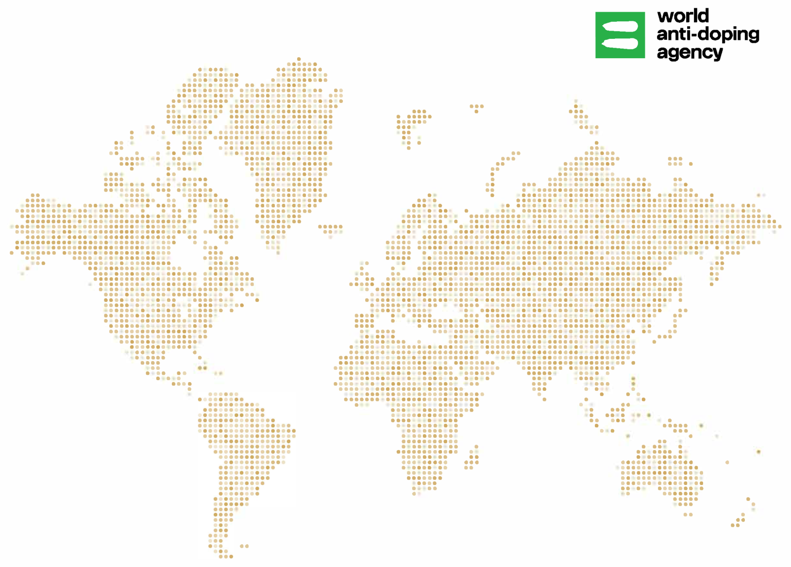
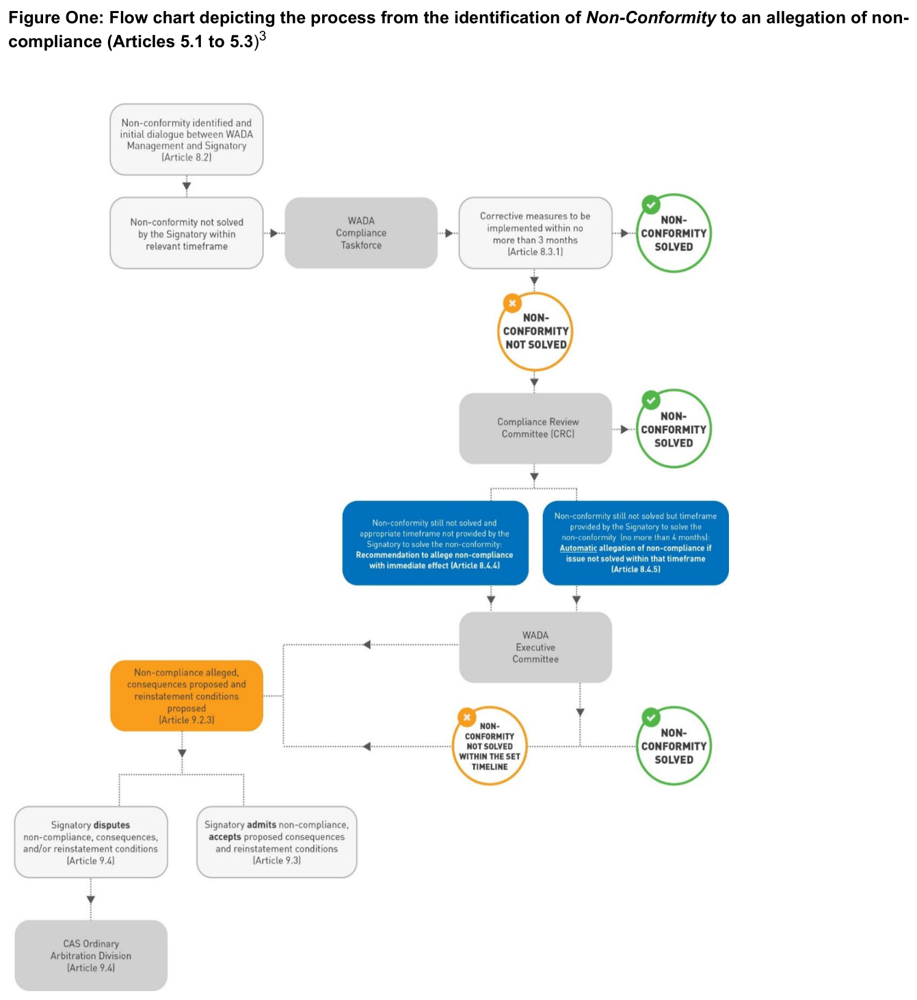
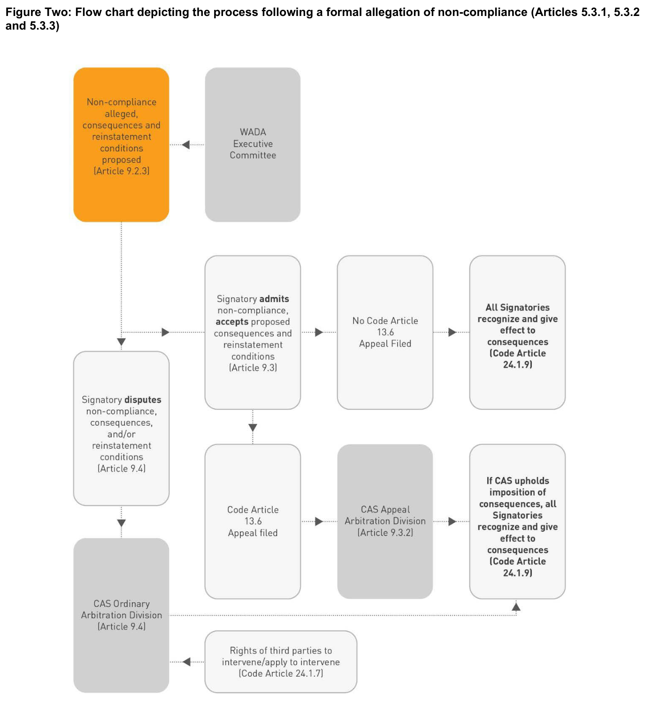

International Standards · ISCCS
Edition 2024 · effective 1 April 2024 · superseded
Retrieved on 25 November 2026 from https://www.wada-ama.org/sites/default/files/2024-05/final_draft_of_isccs_-_approved_exco_16_nov_2023_-_annex_b4_approved_11_mar_2024_clean_version.pdf
Editions: 2027 (current) · 2024 · 2021 · 2018
p. 1
International Standard for Code Compliance by Signatories

p. 2
The World Anti-Doping Code International Standard for Code Compliance by Signatories is a mandatory International Standard developed as part of the World Anti-Doping Program. It was developed in consultation with Signatories, public authorities, and other relevant stakeholders.
The International Standard for Code Compliance by Signatories was first adopted in 2017 and came into effect in April 2018. A revised version was approved by the WADA Executive Committee at the World Conference on Doping in Sport in Katowice on 7 November 2019 and came into effect on 1 January 2021.
The present version was approved by the WADA Executive Committee on 16 November 2023, while its Annex B was approved by the WADA Executive Committee on 11 March 2024. This revised version is effective as of 1 April 2024.
Published by:
World Anti-Doping Agency Stock Exchange Tower 800 Place Victoria (Suite 1700) PO Box 120 Montreal, Quebec Canada H3E 0B4
www.wada-ama.org
Tel: +1 514 904 9232
Fax: +1 514 904 8650
E-mail: code@wada-ama,org
p. 3
p. 4
p. 5
PART ONE: INTRODUCTION, CODE PROVISIONS, INTERNATIONAL STANDARD PROVISIONS, AND DEFINITIONS
1.0 Introduction and Scope
The purpose of the International Standard for Code Compliance by Signatories is to set out the relevant framework and procedures for ensuring Code Compliance by Signatories.
Signatories to the World Anti-Doping Code (the Code) commit to comply with a number of legal, technical, and operational requirements that are set out in the Code and the accompanying International Standards. Such compliance is necessary to deliver harmonized, coordinated, and effective Anti-Doping Programs at the international and national level, so that Athletes and other stakeholders can experience doping-free competition on a level playing field wherever sport is played.
The Code makes WADA responsible for monitoring and enforcing compliance by Signatories with the Code and the International Standards. The Code also requires Signatories to report on their compliance to WADA. Under the Code, it is the CAS, not WADA, that is responsible for determining non-compliance and imposing consequences on Signatories if they do not accept WADA's allegation of non-compliance and/or the Signatory Consequences proposed by WADA.
The International Standard for Code Compliance by Signatories sets out:
- the roles, responsibilities, and procedures of the different bodies involved in WADA's compliance monitoring function (Part Two, Article 5);
- the support and assistance that WADA will offer to Signatories in their efforts to comply with the Code and the International Standards (Part Two, Article 6);
- the means by which WADA will monitor compliance by Signatories with their obligations under the Code and the International Standards (Part Two, Article 7);
- the opportunities and support that WADA will offer to Signatories to correct Non-Conformities before any formal action is taken (Part Two, Article 8);
- if a Signatory fails to correct the Non-Conformities, the process to be followed to get CAS to hear and determine an allegation of non-compliance and to determine the Signatory Consequences of such non-compliance. This process mirrors, insofar as is appropriate and practicable, the process followed in determining Code non-compliance and the Consequences of such non-compliance for Athletes and other Persons (Part Two, Articles 9 and 10; Annexes A and B);
- the principles to be applied by CAS to determine the Signatory Consequences to be imposed in a particular case, depending on the facts and circumstances of that case (Part Two, Article 10; Annexes A and B);
- the procedures that WADA will follow to ensure that a Signatory that has been determined to be non-compliant is Reinstated as quickly as possible once it has corrected that non-compliance (Part Two, Article 11); and
p. 6
- the transitional provisions applicable to proceedings pending as of 1 April 2024 (Part Two, Article 12).
The ultimate objective is to ensure that strong *Code-*compliant anti-doping rules and programs are applied and enforced consistently and effectively across all sports and all countries, so that clean Athletes can have confidence that there is fair competition on a level playing field, and public confidence in the integrity of sport can be maintained. However, the International Standard for Code Compliance by Signatories is flexible enough to recognize certain priorities. In particular, it includes specific provisions (including a special fast-track procedure) to enable WADA to take urgent and effective action to address instances of deliberate and/or bad faith non-compliance with Critical Code requirements. It also gives WADA discretion to prioritize its compliance efforts in particular areas and/or with particular Signatories. Most importantly, Signatories who are seeking in good faith to comply with the Code will be encouraged and supported to achieve and maintain full Code Compliance. The desire is always to have Signatories address any compliance issues voluntarily. Having a Signatory declared non-compliant and Signatory Consequences imposed is the last resort, to be pursued only where the Signatory has failed, despite every encouragement, to correct its Non-Conformities.
In the interests of transparency and accountability, WADA may publish as much detail as it considers appropriate about its general compliance monitoring program. It may also publish information about activities and outcomes in respect of individual Signatories who have been the subject of specific action under the program.
Terms used in this International Standard that are defined terms from the Code are italicized. Terms that are defined in this or another International Standard are underlined.
2.0 Relevant Code and International Standard for Laboratories Provisions
The following articles in the Code are directly relevant to the International Standard for Code Compliance by Signatories. They can be obtained by referring to the Code itself:
- Article 12 Sanctions by Signatories Against Other Sporting Bodies
- Article 13.6 Appeals from Decisions under Article 24.1
- Article 20 Additional Roles and Responsibilities of Signatories and WADA
- Article 24 Monitoring and Enforcing Compliance with the Code and UNESCO Convention.
The following articles in the International Standard for Laboratories are directly relevant to the International Standard for Code Compliance by Signatories. They can be obtained by referring to the International Standard for Laboratories itself:
- Article 4.1.2 Applicant Laboratory, Submit Initial Application Form
- Article 4.8.1.2 Applicant Laboratory for WADA approval for the ABP, Submit Initial Application Form.
3.0 Definitions and Interpretation
3.1 Defined terms from the Code that are used in the International Standard for Code
p. 7
Compliance by Signatories
ADAMS: The Anti-Doping Administration and Management System is a Web-based database management tool for data entry, storage, sharing, and reporting designed to assist stakeholders and WADA in their anti-doping operations in conjunction with data protection legislation.
Adverse Analytical Finding: A report from a WADA-accredited laboratory or other WADA-approved laboratory that, consistent with the International Standard for Laboratories, establishes in a Sample the presence of a Prohibited Substance or its Metabolites or Markers or evidence of the Use of a Prohibited Method.
Adverse Passport Finding: A report identified as an Adverse Passport Finding as described in the applicable International Standards.
Aggravating Factors: This term encompasses a deliberate attempt to circumvent or undermine the Code or the International Standards and/or to corrupt the anti-doping system, an attempt to cover up non-compliance, or any other form of bad faith on the part of the Signatory in question; a persistent refusal or failure by the Signatory to make any reasonable effort to correct Non-Conformities that are notified to it by WADA; repeat offending; and any other factor that aggravates the Signatory's non-compliance.
Anti-Doping Activities: Anti-doping Education and information, test distribution planning, maintenance of a Registered Testing Pool, managing Athlete Biological Passports, conducting Testing, organizing analysis of Samples, gathering of intelligence and conduct of investigations, processing of TUE applications, Results Management, hearings, monitoring and enforcing compliance with any Consequences imposed, and all other activities related to anti-doping to be carried out by or on behalf of an Anti-Doping Organization, as set out in the Code and/or the International Standards.
Anti-Doping Organization: WADA or a Signatory that is responsible for adopting rules for initiating, implementing or enforcing any part of the Doping Control process. This includes, for example, the International Olympic Committee, the International Paralympic Committee, other Major Event Organizations that conduct Testing at their Events, International Federations, and National Anti-Doping Organizations.
Approved Third Party: One or more Anti-Doping Organizations and/or Delegated Third Parties selected or approved by WADA, following consultation with the non-compliant Signatory, to Supervise or Takeover some or all of that Signatory's Anti-Doping Activities. As a last resort, if there is no other suitable body available, then WADA may carry out this function itself.
Athlete: Any Person who competes in sport at the international level (as defined by each International Federation) or the national level (as defined by each National Anti-Doping Organization). An Anti-Doping Organization has discretion to apply anti-doping rules to an Athlete who is neither an International-Level Athlete nor a National-Level Athlete, and thus to bring them within the definition of "Athlete." […]
[Comment to Athlete: Individuals who participate in sport may fall in one of five categories: 1) International-Level Athlete, 2) National-Level Athlete, 3) individuals who are not International- or National-Level Athletes but over whom the International Federation or National Anti-Doping Organization has chosen to exercise authority, 4) Recreational Athlete, and 5) individuals over whom no International Federation or National Anti-Doping Organization has, or has chosen to, exercise authority. All International- or National-Level Athletes are subject to the anti-doping rules of the Code, with the precise definitions of international and national level sport to be set forth in the anti-doping rules of the International Federations and National Anti- Doping Organizations.]
p. 8
Athlete Biological Passport: The program and methods of gathering and collating data as described in the International Standard for Testing and Investigations and International Standard for Laboratories.
Athlete Support Personnel: Any coach, trainer, manager, agent, team staff, official, medical, paramedical personnel, parent or any other Person working with, treating or assisting an Athlete participating in or preparing for sports Competition.
Atypical Finding: A report from a WADA-accredited laboratory or other WADA-approved laboratory which requires further investigation as provided by the International Standard for Laboratories or related Technical Documents prior to the determination of an Adverse Analytical Finding.
CAS: The Court of Arbitration for Sport.
Code: The World Anti-Doping Code.
Consequences of Anti-Doping Rule Violations ("Consequences"): An Athlete's or other Person's violation of an anti-doping rule may result in one or more of the following: (a) Disqualification means the Athlete's results in a particular Competition or Event are invalidated, with all resulting Consequences including forfeiture of any medals, points and prizes; (b) Ineligibility means the Athlete or other Person is barred on account of an anti-doping rule violation for a specified period of time from participating in any Competition or other activity or funding as provided in Article 10.14.1; (c) Provisional Suspension means the Athlete or other Person is barred temporarily from participating in any Competition or activity prior to the final decision at a hearing conducted under Article 8; (d) Financial Consequences means a financial sanction imposed for an anti-doping rule violation or to recover costs associated with an anti-doping rule violation; and (e) Public Disclosure means the dissemination or distribution of information to the general public or Persons beyond those Persons entitled to earlier notification in accordance with Article 14. Teams in Team Sports may also be subject to Consequences as provided in Article 11.
Critical: A requirement that is considered to be Critical to the fight against doping in sport. See further Annex A of the International Standard for Code Compliance by Signatories.
Delegated Third Party: Any Person to which an Anti-Doping Organization delegates any aspect of Doping Control or anti-doping Education programs including, but not limited to, third parties or other Anti-Doping Organizations that conduct Sample collection or other Doping Control services or anti-doping Educational programs for the Anti-Doping Organization, or individuals serving as independent contractors who perform Doping Control services for the Anti-Doping Organization (e.g., non-employee Doping Control officers or chaperones). This definition does not include CAS.
Doping Control: All steps and processes from test distribution planning through to ultimate disposition of any appeal and the enforcement of Consequences, including all steps and processes in between, including but not limited to, Testing, investigations, whereabouts, TUEs, Sample collection and handling, laboratory analysis, Results Management, hearings and appeals, and investigations or proceedings relating to violations of Article 10.14 (Status During Ineligibility or Provisional Suspension).
p. 9
Education: The process of learning to instill values and develop behaviors that foster and protect the spirit of sport, and to prevent intentional and unintentional doping.
Event: A series of individual Competitions conducted together under one ruling body (e.g., the Olympic Games, world championships of an International Federation, or Pan American Games).¹
Fine: Payment by the Signatory of an amount that reflects the seriousness of the non-compliance/Aggravating Factors, its duration, and the need to deter similar conduct in the future. In a case that does not involve non-compliance with any Critical requirements, the Fine shall not exceed the lower of (a) 10% of the Signatory's total annual budgeted expenditure; and (b) US$100,000. The Fine will be applied by WADA to finance further Code compliance monitoring activities and/or anti-doping Education and/or anti-doping research.
General: A requirement that is considered to be important to the fight against doping in sport but does not fall into the categories of Critical or High Priority. See further Annex A of the International Standard for Code Compliance by Signatories.
High Priority: A requirement that is considered to be High Priority but not Critical in the fight against doping in sport. See further Annex A of the International Standard for Code Compliance by Signatories.
Independent Observer Program: A team of observers and/or auditors, under the supervision of WADA, who observe and provide guidance on the Doping Control process prior to or during certain Events and report on their observations as part of WADA's compliance monitoring program.
International Event: An Event or Competition where the International Olympic Committee, the International Paralympic Committee, an International Federation, a Major Event Organization, or another international sport organization is the ruling body for the Event or appoints the technical officials for the Event.
International Standard: A standard adopted by WADA in support of the Code. Compliance with an International Standard (as opposed to another alternative standard, practice or procedure) shall be sufficient to conclude that the procedures addressed by the International Standard were performed properly. International Standards shall include any Technical Documents issued pursuant to the International Standard.
Major Event Organizations: The continental associations of National Olympic Committees and other international multi-sport organizations that function as the ruling body for any continental, regional or other International Event.
National Anti-Doping Organization: The entity(ies) designated by each country as possessing the primary authority and responsibility to adopt and implement anti-doping rules, direct the collection of Samples, manage test results and conduct Results Management at the national level. If this designation has not been made by the competent public authority(ies), the entity shall be the country's National Olympic Committee or its designee.
1 Where the term 'Event' is used in Annex B of this International Standard for Code Compliance by Signatories, it has the meaning set out above, but in addition the event must be under the authority of a Signatory in order to qualify as an 'Event' for purposes of Annex B.
p. 10
National Olympic Committee: The organization recognized by the International Olympic Committee. The term National Olympic Committee shall also include the National Sport Confederation in those countries where the National Sport Confederation assumes typical National Olympic Committee responsibilities in the anti-doping area.
Non-Conformity: Where a Signatory is not complying with the Code and/or one or more International Standards and/or any requirements imposed by the WADA Executive Committee, but the opportunities provided in the International Standard for Code Compliance by Signatories to correct the Non-Conformity/Non-Conformities have not yet expired and so WADA has not yet formally alleged that the Signatory is non-compliant.
Person: A natural Person or an organization or other entity.
Publicly Disclose: See Consequences of Anti-Doping Rule Violations above.
Registered Testing Pool: The pool of highest-priority Athletes established separately at the international level by International Federations and at the national level by National Anti-Doping Organizations, who are subject to focused In-Competition and Out-of-Competition Testing as part of that International Federation's or National Anti-Doping Organization's test distribution plan and therefore are required to provide whereabouts information as provided in Article 5.5 and the International Standard for Testing and Investigations.
Reinstatement: When a Signatory that was previously declared non-compliant with the Code and/or the International Standards is determined to have corrected that non-compliance and to have met all of the other conditions imposed in accordance with Article 11 of the International Standard for Code Compliance by Signatories for Reinstatement of its name to the list of *Code-*compliant Signatories (and Reinstated shall be interpreted accordingly).
Representatives: Officials, directors, officers, elected members, employees, and committee members of the Signatory or other body in question, and also (in the case of a National Anti-Doping Organization or a National Olympic Committee acting as a National Anti-Doping Organization) Representatives of the government of the country of that National Anti-Doping Organization or National Olympic Committee.
Results Management: The process encompassing the timeframe between notification as per Article 5 of the International Standard for Results Management, or in certain cases (e.g., Atypical Finding, Athlete Biological Passport, Whereabouts Failure), such pre-notification steps expressly provided for in Article 5 of the International Standard for Results Management, through the charge until the final resolution of the matter, including the end of the hearing process at first instance or on appeal (if an appeal was lodged).
Sample or Specimen: Any biological material collected for the purposes of Doping Control.
[Comment to Sample or Specimen: It has sometimes been claimed that the collection of blood Samples violates the tenets of certain religious or cultural groups. It has been determined that there is no basis for any such claim.]
Signatories: Those entities accepting the Code and agreeing to implement the Code, as provided in Article 23.²
p. 11
Special Monitoring: Where, as part of the consequences imposed on a non-compliant Signatory, WADA applies a system of specific and ongoing monitoring to some or all of the Signatory's Anti-Doping Activities, to ensure that the Signatory is carrying out those activities in a compliant manner.
Supervision: Where, as part of the consequences imposed on a non-compliant Signatory, an Approved Third Party oversees and supervises the Signatory's Anti-Doping Activities, as directed by WADA, at the Signatory's expense (and Supervise shall be interpreted accordingly). Where a Signatory has been declared non-compliant and has not yet finalized a Supervision agreement with the Approved Third Party, that Signatory shall not implement independently any Anti-Doping Activity in the area(s) that the Approved Third Party is to oversee and supervise without the express prior written agreement of WADA.
Takeover: Where, as part of the consequences imposed on a non-compliant Signatory, an Approved Third Party takes over all or some of the Signatory's Anti-Doping Activities, as directed by WADA, at the Signatory's expense. Where a Signatory has been declared non-compliant and has not yet finalized a Takeover agreement with the Approved Third Party, that Signatory shall not implement independently any Anti-Doping Activity in the area(s) that the Approved Third Party is to take over without the express prior written agreement of WADA.
Target Testing: Selection of specific Athletes for Testing based on criteria set forth in the International Standard for Testing and Investigations.
Technical Document: A document adopted and published by WADA from time to time containing mandatory technical requirements on specific anti-doping topics as set forth in an International Standard.
Testing: The parts of the Doping Control process involving test distribution planning, Sample collection, Sample handling, and Sample transport to the laboratory.
Therapeutic Use Exemption (TUE): A Therapeutic Use Exemption allows an Athlete with a medical condition to use a Prohibited Substance or Prohibited Method, but only if the conditions set out in Article 4.4 and the International Standard for Therapeutic Use Exemptions are met.
2 For purposes of this International Standard for Code Compliance by Signatories, if a Signatory is replaced by a successor entity, then (unless WADA decides otherwise) the successor entity will be deemed, by virtue of its acceptance of the role of successor to or replacement for that Signatory under and in accordance with the Code: (1) to have acquired the rights of the predecessor Signatory to dispute any compliance issue; and (2) to have assumed the liability of the predecessor Signatory for any compliance issue (including being bound by any resulting Consequences and having to satisfy any resulting Reinstatement conditions). For these purposes, a 'compliance issue' means any non-compliance that took place before the time of replacement but for which a compliance procedure: (a) has not yet been started at the time of the replacement; or (b) has been started by the time of the replacement but not yet completed (i.e., the asserted non-compliance has not yet been determined and/or the Consequences imposed on account of the non-compliance have not yet been discharged in full and/or the Reinstatement conditions imposed have not yet been satisfied in full). Where a Signatory is to be replaced by more than one successor entity, either agreement shall be reached with WADA that one of the successor entities will acquire the rights and assume the liability of the predecessor Signatory in respect of any compliance issue, or else each of the successor entities will be deemed, by virtue of its acceptance of the role of partial successor to or replacement for that Signatory under and in accordance with the Code, to have acquired such rights and assumed such liability on a joint and several basis with the other successor entity/ies.
p. 12
UNESCO Convention: The International Convention against Doping in Sport adopted by the 33rd session of the UNESCO General Conference on 19 October 2005, including any and all amendments adopted by the States Parties to the Convention and the Conference of Parties to the International Convention against Doping in Sport.
WADA: The World Anti-Doping Agency.
3.2 Defined terms from the International Standard for Education
Education Plan: A document that includes: a situation assessment; identification of an Education Pool; objectives; Education activities and monitoring procedures as required by Article 4.
Education Pool: A list of target groups identified through a system assessment process.
Education Program: A collection of Education activities undertaken by a Signatory to achieve the intended learning objectives.
Educator: A person who has been trained to deliver Education and is authorized by a Signatory for this purpose.
Values-Based Education: Delivering activities that emphasize the development of an individual's personal values and principles, to build their capacity to make decisions to behave ethically.
3.3 Defined term from the International Standard for Laboratories
Athlete Passport Management Unit (APMU): A unit composed of a Person or Persons that is responsible for the timely management of Athlete Biological Passports in ADAMS on behalf of the Passport Custodian.
3.4 Defined term from the International Standard for the Protection of Privacy and Personal Information
Personal Information: Information, including without limitation Sensitive Personal Information, relating to an identified or identifiable Participant or other Person whose information is Processed solely in the context of an Anti-Doping Organization's Anti-Doping Activities.
[Comment to Personal Information: It is understood that Personal Information includes, but is not limited to, information relating to an Athlete's name, date of birth, contact details and sporting affiliations, whereabouts, designated TUEs (if any), anti-doping test results, and Results Management (including disciplinary hearings, appeals and sanctions). Personal Information also includes personal details and contact information relating to other Persons, such as medical professionals and other Persons working with, treating or assisting an Athlete in the context of Anti-Doping Activities. Such information remains Personal Information and is regulated by this International Standard for the entire duration of its Processing, irrespective of whether the relevant individual remains involved in organized sport.]
3.5 Defined terms from the International Standard for Testing and Investigations
Chain of Custody: The sequence of individuals or organizations who have responsibility for the custody of a Sample from the provision of the Sample until the Sample has been delivered to the laboratory for analysis.
p. 13
No Advance Notice Testing: Sample collection that takes place with no advance warning to the Athlete and where the Athlete is continuously chaperoned from the moment of notification through Sample provision.
Risk Assessment: The assessment of risk of doping in a sport or sports discipline conducted by an Anti-Doping Organization in accordance with Article 4.2.
Sample Collection Authority: The organization that is responsible for the collection of Samples in compliance with the requirements of the International Standard for Testing and Investigations, whether (1) the Testing Authority itself; or (2) a Delegated Third Party to whom the authority to conduct Testing has been granted or sub-contracted. The Testing Authority always remains ultimately responsible under the Code for compliance with the requirements of the International Standard for Testing and Investigations relating to collection of Samples.
Sample Collection Equipment: A and B bottles, kits or containers, collection vessels, tubes or other apparatus used to collect, hold or store the Sample at any time during and after the Sample Collection Session that shall meet the requirements of Article 6.3.4.
Sample Collection Personnel: A collective term for qualified officials authorized by the Sample Collection Authority to carry out or assist with duties during the Sample Collection Session.
Sample Collection Session: All of the sequential activities that directly involve the Athlete from the point that initial contact is made until the Athlete leaves the Doping Control Station after having provided their Sample(s).
Test Distribution Plan: A document written by an Anti-Doping Organization that plans Testing on Athletes over whom it has Testing Authority, in accordance with the requirements of Article 4.
3.6 Defined term from the International Standard for Therapeutic Use Exemptions
Therapeutic Use Exemption Committee (or "TUEC"): The panel established by an Anti-Doping Organization to consider applications for TUEs.
3.7 Defined terms specific to the International Standard for Code Compliance by Signatories
Anti-Doping Program: The legislation, rules, regulations, processes and procedures, and other activities (including Anti-Doping Activities) that a Signatory is required to implement in order to achieve Code Compliance.
Code Compliance: Compliance with all of the requirements in the Code and/or the International Standards that apply to the Signatory in question, as well as with any special requirements imposed by the WADA Executive Committee.
Code Compliance Questionnaire: A self-assessment survey issued by WADA in the form of a questionnaire, which a Signatory uses to report to WADA on the Signatory's Code Compliance.
p. 14
Compliance Audit: A formal assessment conducted by WADA of all or part of a Signatory's Anti-Doping Program, in accordance with Article 7.7.
Compliance Review Committee or CRC: As described in Article 5.2.1.
Corrective Action Plan: A plan drafted by a Signatory, setting out how the Signatory will implement the corrective actions identified by WADA in a Corrective Action Report within the timeframes set in that report.
Corrective Action Report: A report produced by WADA that identifies Non-Conformities by a Signatory, the actions that the Signatory must take to correct them, and the timeframes within which those corrective actions must be completed.
Event of Force Majeure: An event affecting a Signatory's ability to achieve full Code Compliance that arises from or is attributable to acts, events, omissions, or accidents that are beyond the reasonable control of the Signatory. Such events may include any natural physical disaster, war, military operations, riot, crowd disorder, strike, lock-outs or other industrial action, terrorist action, or civil commotion. In no circumstances, however, shall it be considered an Event of Force Majeure (whether to excuse Non-Conformities, or to mitigate the Consequences to be imposed for Non-Conformities, or to excuse non-satisfaction of any Reinstatement conditions):
(1) that the Non-Conformity has been caused by a lack of resources, changes in elected officials or personnel, or by any act or omission (including any interference and/or a failure to provide support) by any governmental or other public authorities. Each Signatory has voluntarily accepted the obligation to comply with its obligations under the Code and the International Standards, which includes an obligation under Code Article 23.3 to devote sufficient resources, and (where applicable) an obligation to secure the support of governmental and other public authorities, as required in order to achieve and maintain Code Compliance; or
(2) that the Signatory delegated the task of complying with some or all of its obligations under the Code and/or the International Standards to a Delegated Third Party (such as a Sample Collection Authority to whom the Signatory has assigned the task of collecting Samples; or a local organizing committee to which a Major Event Organization has assigned the task of running its Anti-Doping Program at the Event in question).
[Comment to Event of Force Majeure]: As CAS ruled in RPC v IPC, CAS 2016/A/4745, (a) a body with an obligation to enforce the Code within its sphere of authority remains fully liable for any violations even if they are due to the actions of other bodies that it relies on but that it does not control; and (b) just as an Athlete cannot escape the Consequences of an anti-doping rule violation by delegating his or her responsibility to comply with his or her anti-doping obligations to others, so too a Signatory has an absolute and non-delegable obligation to comply with the requirements of the Code and the International Standards. The Signatory has the right to decide how to meet that obligation, including the right to assign certain tasks to appropriate third parties, should it see fit, but it remains fully responsible for complying with the Code and the International Standards, and is fully liable for any non-compliance caused by any failures of such third party.]
Mandatory Information Request: A request that WADA may send to a Signatory, requiring the Signatory to provide specified information by a specified date to enable WADA to assess the Signatory's Code Compliance.
Prioritization Policy: A policy proposed by WADA Management and approved by the CRC to prioritize the monitoring for Code Compliance of certain categories of Signatories and/or the enforcement of certain requirements, as further described in Article 7.2.
p. 15
Signatory Consequences: One or more of the consequences set out in Code Article 24.1.12 that may be imposed on a Signatory as a result of its failure to maintain Code Compliance, such consequences to be based on the particular facts and circumstances of the case at hand, and applying the principles set out in Article 10.
WADA Auditor: A suitably experienced WADA staff member or external anti-doping specialist who has been trained by WADA to conduct the assessment of a Signatory's Code Compliance. The WADA Auditor should be free of any conflict of interest in respect of each Compliance Audit that he/she undertakes.
WADA Privileges: The benefits listed at Code Article 24.1.12.1.
Watchlist Procedure: The special procedure described in Article 8.4.5.
3.8 Interpretation
3.8.1 The official text of the International Standard for Code Compliance by Signatories shall be maintained by WADA and shall be published in English and French. In the event of any conflict between the English and French versions, the English version shall prevail.
3.8.2 Like the Code, the International Standard for Code Compliance by Signatories has been drafted giving consideration to the principles of proportionality, human rights, and other applicable legal principles. It shall be interpreted and applied in that light.
3.8.3 The comments annotating various provisions of the International Standard for Code Compliance by Signatories shall be used to guide its interpretation.
3.8.4 Unless otherwise specified, references to Articles or Annexes are references to Articles or Annexes of the International Standard for Code Compliance by Signatories.
3.8.5 Where the term "days" is used in the International Standard for Code Compliance by Signatories, it shall mean calendar days unless otherwise specified.
3.8.6 The Annexes to the International Standard for Code Compliance by Signatories have the same mandatory status as the rest of the International Standard.
PART TWO: STANDARDS FOR WADA'S MONITORING AND ENFORCEMENT OF CODE COMPLIANCE BY SIGNATORIES
4.0 Objective
4.1 The objective of Part Two of the International Standard for Code Compliance by Signatories is to ensure that Signatories deliver Anti-Doping Programs within their respective spheres of responsibility that meet the requirements of the Code and the International Standards, so that there is a level playing field wherever sport is played.
4.2 The desire is always to have Signatories address any compliance issues voluntarily. Having a Signatory declared non-compliant and Signatory Consequences imposed is the last resort, p. 16 to be pursued only where the Signatory has failed, despite every encouragement, to take the necessary corrective actions within the required timeframes.
4.3 Therefore, the focus of WADA's compliance monitoring program is on dialogue and communication with Signatories, assisting them in their efforts to ensure full Code Compliance, and providing them with guidance for the continuous improvement of their Anti-Doping Programs. Where instances of Non-Conformity are identified, the International Standard for Code Compliance by Signatories establishes objective, pre-determined, and transparent procedures and standards that give the Signatory the opportunity to correct those Non-Conformities, and that lead (if the Non-Conformities are not corrected) to a determination of non-compliance and the imposition of predictable, graded, and proportionate Signatory Consequences. The International Standard for Code Compliance by Signatories also sets out a clear pathway to Reinstatement.
5.0 Roles, Responsibilities, and Procedures of the Different Bodies Involved in WADA's Compliance Monitoring Function
p. 17

Figure One: Flow chart depicting the process from the identification of Non-Conformity to an allegation of non-compliance (Articles 5.1 to 5.3) 3
5.1 Operational Oversight of Code Compliance
5.1.1 Operational oversight of Code Compliance is provided by WADA Management through
3 Note: The diagram does not depict a compliance procedure where there is no Corrective Action Report, i.e., a compliance procedure triggered by a failure to respond to a Code Compliance Questionnaire or a Mandatory Information Request or a compliance procedure conducted on a fast-track basis further to Article 8.5.
p. 18
an internal WADA Compliance Taskforce consisting of staff from different WADA departments.
5.1.2 WADA Management is responsible for coordinating and directing the development of all activities related to WADA's compliance monitoring program in coordination with the Compliance Review Committee (CRC), and in accordance with any prioritization of effort approved by the CRC further to Article 7.2. This includes:
5.1.2.1 coordinating the provision of ongoing support and assistance by WADA to Signatories in meeting their obligations under the Code and the International Standards (see Article 6);
5.1.2.2 using all tools at WADA's disposal to monitor Code Compliance by Signatories, including but not limited to ADAMS, Code Compliance Questionnaires, Mandatory Information Requests, Compliance Audits, information obtained by program area monitoring, and any other relevant information received or collected by WADA (see Article 7);
5.1.2.3 where Non-Conformities are identified, opening a dialogue with the Signatory, identifying corrective actions to be taken by the Signatory to correct the Non-Conformities, and providing guidance to help the Signatory to complete the corrective actions within the set timeframes (see Article 8);
5.1.2.4 assessing whether the Signatory's corrective actions have corrected the Non-Conformities in full, referring cases to the CRC where the Non-Conformities have not been corrected in full, providing reports with relevant supporting information and any observations that WADA Management considers appropriate and/or that are requested by the CRC in order to facilitate CRC discussions, and implementing and following up on CRC recommendations (see Articles 8 and 9);
5.1.2.5 where a Signatory fails to correct the Non-Conformities within the required timeframe, and following the recommendation of the CRC, obtaining the approval of WADA's Executive Committee to notify the Signatory formally of the alleged non-compliance, with such notice also specifying the Signatory Consequences that it is contended should apply for such non-compliance and the conditions that it is proposed the Signatory should have to satisfy in order to be Reinstated (see Articles 8, 9, 10 and 11); and
5.1.2.6 monitoring the Signatory's efforts to satisfy the Reinstatement conditions imposed on it, in order to report to the CRC on whether and when to recommend that the Signatory be Reinstated (see Article 11).
5.2 Independent Review and Recommendations
5.2.1 The Compliance Review Committee is an independent, non-political WADA Special Committee that oversees WADA's Code Compliance monitoring efforts and enforcement activities, and provides advice and recommendations on such matters to WADA's Executive Committee.
5.2.1.1 The CRC is governed by Terms of Reference that are designed to ensure the independence, political neutrality, and specialization of its members, and p. 19 that underpin the credibility of its work. The Terms of Reference include strict conflict of interest provisions that require CRC members to declare any potential conflicts of interest and to exclude themselves from all CRC deliberations in any matter in which they have a conflict of interest.
5.2.2 The CRC follows standardized procedures encompassing review, assessment, communication, and the making of recommendations to WADA's Executive Committee on matters relating to Code Compliance, correction of Non-Conformities, and Reinstatement. These procedures (see Articles 8, 9 and 11) are designed to support a transparent, objective, and consistent approach to the assessment and enforcement of Code Compliance.
5.2.2.1 Where WADA Management reports apparent Non-Conformities to the CRC, a procedure is followed that gives the Signatory in question the time and opportunity to explain and correct the Non-Conformities within a specified timeframe as to achieve full Code Compliance (see Article 8).
5.2.2.2 If the Signatory does not correct the Non-Conformities within the framework of that procedure, the CRC will review the case in detail and decide whether to recommend to WADA's Executive Committee that a formal notice be issued to the Signatory alleging non-compliance (see Article 5.3).
5.2.3 In addition to reviewing and assessing compliance-related issues raised by WADA Management, at any time the CRC may identify compliance-related issues of its own accord to be addressed by WADA Management.
5.3 Independent Determination of Non-Compliance and Signatory Consequences
5.3.1 In accordance with Code Article 24.1.4, upon the recommendation of the CRC, WADA's Executive Committee may approve the sending to a Signatory of a formal notice of its alleged non-compliance with the Code and/or the International Standards, with such notice also specifying the Signatory Consequences that it is contended should apply for such non-compliance, and the conditions that it is proposed the Signatory should have to satisfy in order to be Reinstated.
5.3.2 In accordance with Code Article 24.1.5, if the Signatory accepts or does not dispute the contents of that notice within twenty-one (21) days of its receipt, the allegation of non-compliance will be deemed admitted and the Signatory Consequences and Reinstatement conditions will be deemed accepted, and (subject to Article 9.3) the notice will automatically become a final decision enforceable with immediate effect in accordance with Code Article 24.1.9. If the Signatory disputes any part of the notice, the dispute will be resolved by CAS in accordance with Code Article 24.1.6.
5.3.3 Once the notice is accepted as a final decision by the Signatory, or (if disputed) once a final decision is issued by CAS, then (in accordance with Code Article 24.1.9) that decision shall be applicable worldwide and shall be recognized, respected and given full effect by all other Signatories in accordance with their authority and within their respective spheres of responsibility (see Figure Two below).
5.4 The Principle of Last Resort
5.4.1 Consistent with the principle of 'last resort', in any case (including not only ordinary but p. 20 also fast track cases), if a Signatory does not meet the required timeframes for correcting Non-Conformities and so the case is referred to the CRC and beyond, if the Signatory corrects the Non-Conformities at any time before Signatory Consequences are imposed by CAS then no Signatory Consequences shall be imposed, save to the extent that (a) costs have been incurred in pursuing the case before CAS (in which case the Signatory must cover those costs); and/or (b) the failure to correct a Non-Conformity within the required timeframe has resulted in irreparable prejudice to the fight against doping in sport (in which case Signatory Consequences may be imposed to reflect that prejudice).
p. 21

Figure Two: Flow chart depicting the process following a formal allegation of non-compliance (Articles 5.3.1, 5.3.2 and 5.3.3)
5.5 Reinstatement Procedures
5.5.1 Where applicable, WADA Management will report to the CRC on the Signatory's implementation of the Reinstatement conditions, and the CRC will then make recommendations to WADA's Executive Committee as to whether or not the Signatory p. 22 has satisfied those conditions and should be Reinstated.
5.5.2 Where WADA's Executive Committee alleges that a Signatory has not yet satisfied its Reinstatement conditions and so should not yet be Reinstated, if the Signatory disputes that allegation, the dispute will be resolved by CAS in accordance with Code Article 24.1.10. In accordance with Code Article 24.1.9, the CAS decision shall be applicable worldwide and shall be recognized, respected and given full effect by all other Signatories in accordance with their authority and within their respective spheres of responsibility.
6.0 WADA's Support for Signatories' Efforts to Achieve/Maintain Code Compliance
6.1 Objective
6.1.1 WADA's priority is to support Signatories in strengthening their Anti-Doping Programs, thereby increasing the protection that they provide to clean Athletes. It shall remain at all times the Signatory's obligation to achieve full Code Compliance, and it shall not be a defense or excuse that others did not help the Signatory to comply. However, WADA will use all reasonable endeavors to provide support and assistance to Signatories seeking to achieve, maintain or return to full Code Compliance.
6.2 Operational and Technical Support
6.2.1 WADA will provide operational and technical support to Signatories to assist them to achieve, maintain, or (where applicable) return to full Code Compliance, including by providing advice and information, by developing resources, guidelines, training materials, and training programs, and by facilitating partnerships with other Anti-Doping Organizations where possible. Where the WADA budget allows, this support shall be provided without cost to Signatories.
6.2.2 WADA will maintain a number of documents and tools to assist Signatories to understand their responsibilities under the Code and the International Standards, and to achieve and maintain full compliance with those responsibilities, including:
6.2.2.1 model rules for the implementation of the Code and the International Standards within the Signatory's area of competence;
6.2.2.2 guideline documents covering the implementation of various components of a *Code-*compliant Anti-Doping Program, including (without limitation) Testing, TUEs, Results Management, Education, and intelligence and investigations;
6.2.2.3 template documents and forms; and
6.2.2.4 online Education tools.
6.2.3 WADA also maintains the Code Compliance Questionnaire and the Compliance Audit program, which are designed to help Signatories to identify Non-Conformities in their Anti-Doping Programs and to devise and implement plans to correct those Non-Conformities. WADA will provide various forms of support and assistance to Signatories in understanding the Code Compliance Questionnaire, the Compliance
p. 23
Audit program, and all other aspects of the compliance monitoring program, including information sessions; a dedicated section of its website where materials relevant to the compliance monitoring program are posted, including answers to Frequently Asked Questions; and other support resources.
6.2.4 A Signatory may seek assistance from another Signatory to help it achieve full Code Compliance (and WADA will support Signatories in setting up such partnerships, including providing on its website further information and guidelines on partnership agreements) and/or the Signatory may appoint a Delegated Third Party to carry out Anti- Doping Activities on its behalf. In accordance with Code Article 20 and Article 8.4.3 of this International Standard for Code Compliance by Signatories, however, the Signatory shall always remain fully liable for any Non-Conformities arising as a result. The Signatory shall ensure that it is able to require the Delegated Third Party to cooperate in full with (and to enable the Signatory to cooperate in full with) all of WADA's compliance monitoring efforts, including (without limitation) properly addressing Code Compliance Questionnaires, Mandatory Information Requests, Compliance Audits, and all program area monitoring requirements further to Article 7.8.
6.2.5 As set out in Article 8, when Non-Conformities are identified, whether in a completed Code Compliance Questionnaire or in a Compliance Audit or otherwise, the focus of WADA Management will be on assisting the Signatory in question through dialogue and support to achieve full Code Compliance. The Signatory will be given an adequate opportunity to dispute or to correct the Non-Conformities, including (if necessary) by WADA providing a Corrective Action Report that sets out which corrective actions are required, and specifies the timeframes for their completion. The Corrective Action Report may also include recommendations as to best practice, and may refer, where appropriate, to resources and materials posted on WADA's website that may assist the Signatory in responding to the report and strengthening its Anti-Doping Program. In addition, WADA will review any Corrective Action Plan (including any requested and relevant document) provided by a Signatory and provide comments as necessary to ensure that Corrective Action Plan is fit for purpose.
7.0 Monitoring Signatories' Code Compliance Efforts
7.1 Objective
In accordance with its obligation under Code Articles 20.7.3 and 24.1.1 to monitor Code Compliance by Signatories, WADA reviews Signatories' rules and regulations (and/or legislation, if that is how the Code has been implemented in a particular country) to ensure that they are compliant with the Code and the International Standards. WADA also assesses whether Signatories are implementing their rules, regulations and legislation through Anti-Doping Programs that meet all of the requirements of the Code and the International Standards. The purpose of Article 7 is to set out the standards that will govern these monitoring activities. The objective will always be to make the monitoring process as efficient and cost-effective as possible.
7.2 Prioritization Between Different Signatories
7.2.1 The following entities may be Signatories to the Code:
7.2.1.1 the International Olympic Committee and the International Paralympic Committee;
p. 24
7.2.1.2 other Major Event Organizations;
7.2.1.3 International Federations;
7.2.1.4 National Olympic Committees and National Paralympic Committees;
7.2.1.5 National Anti-Doping Organizations; and
7.2.1.6 other organizations having significant relevance in sport.
7.2.2 Given the large number of Signatories, and WADA's limited resources, the CRC may approve proposals by WADA Management to prioritize the monitoring for Code Compliance (a) of certain categories of Signatories, based on the scope of the Anti-Doping Activities required of those Signatories under the Code and the Prioritization Policy; and/or (b) of certain specific Signatories, based on an objective risk assessment. The following is a non-exhaustive list of factors that may be considered in that risk assessment:
7.2.2.1 (where the Signatory is an International Federation) the physiological risk of doping in a particular sport/discipline;
7.2.2.2 (where the Signatory is an International Federation) participation of the
Signatory in the Olympic and/or Paralympic Games;
7.2.2.3 (where the Signatory is a Major Event Organization) the level of Athletes participating in the Event;
7.2.2.4 performances by Athletes from a particular country in International Events;
7.2.2.5 a history of doping in a particular country or a particular sport/discipline;
7.2.2.6 a Signatory's response to a Mandatory Information Request or a Code Compliance Questionnaire;
7.2.2.7 receipt of credible intelligence or the results of an investigation suggesting there may be significant Non-Conformities in the Signatory's Anti-Doping Program;
7.2.2.8 a Signatory's breach of Critical or High Priority requirements under the Code or an International Standard;
7.2.2.9 a Signatory's failure to implement recommendations following collaboration programs in which WADA acted as a facilitator or a party;
7.2.2.10 a Signatory's failure to implement measures (e.g., Target Testing) following a recommendation made or endorsed by WADA (e.g., in relation to Testing in the lead-up to the Olympic Games or Paralympic Games or other Event);
7.2.2.11 (where the Signatory is a NADO or a National Olympic Committee acting as a NADO) the fact that the Signatory's country hosts a WADA-accredited p. 25 laboratory and/or is bidding to host or has won the right to host a major sporting event;
7.2.2.12 where a Signatory that has been found to be non-compliant is seeking to be Reinstated; and/or
7.2.2.13 a request by WADA's Executive Committee and/or WADA's Foundation Board.
7.2.3 Code Article 20 requires International Federations, National Olympic Committees and National Paralympic Committees to enforce Code Compliance by their members/recognized bodies. If, in the course of its monitoring activities, WADA learns of apparent non-compliance with the Code by a member/recognized body of such Signatory, it will notify the Signatory for appropriate follow-up and action in accordance with the Signatory's obligations under the Code.
7.2.4 In addition, again given the large number of Signatories and WADA's limited resources, the CRC may approve proposals by WADA Management to prioritize enforcement of Critical and (in certain circumstances) High Priority requirements of the Code and/or the International Standards (including, where necessary, by alleging non-compliance and proposing imposition of Signatory Consequences), while giving Signatories additional opportunity to take any corrective action(s) necessary to ensure compliance with other requirements of the Code and/or the International Standards. The greatest priority will be given to pursuing the imposition of appropriate Signatory Consequences in cases involving non-compliance with Critical requirements and Aggravating Factors.
7.2.5 WADA may also enlist the support of other bodies to assist it in its monitoring tasks.
7.2.6 For the avoidance of doubt, a Signatory is required to comply in full at all times with its obligations under the Code and the International Standards, whether or not it is prioritized for monitoring by WADA.
7.3 Cooperation with Other Bodies
7.3.1 WADA may cooperate as appropriate with other relevant bodies in promoting full Code Compliance by Signatories, including (without limitation) with UNESCO in its efforts to promote governments' compliance with the UNESCO Convention, with the Council of Europe in its efforts to promote governments' compliance with its Anti-Doping Convention, and/or with any other intergovernmental organization or initiative. The purpose of such cooperation will be to facilitate and maximize the efficacy of WADA's own efforts in monitoring Code Compliance by Signatories. Such cooperation shall be conducted in a manner that respects all applicable data protection laws.
7.3.2 Such cooperation may include (without limitation) coordinating with the other body's compliance monitoring activities in relation to a specific country (e.g., joint site visits, coordinated questionnaires), exchange of relevant information that may be of assistance in such activities, and coordinating actions aimed at assisting and encouraging compliance by relevant parties.
7.4 WADA's Monitoring Tools
p. 26
7.4.1 WADA may make use of all legal means at its disposal to monitor Code Compliance by Signatories, including (without limitation):
7.4.1.1 requiring each Signatory, in accordance with Code Article 24.1.2, to complete and submit Code Compliance Questionnaires and/or other reports on its Code Compliance within reasonable and clearly communicated timeframes. Such reports shall provide all information requested by WADA accurately and completely, explain the reasons for any Non-Conformities identified, and describe the efforts the Signatory has made and/or proposes to make to correct such Non-Conformities;
7.4.1.2 conducting Compliance Audits of Signatories' ongoing Anti-Doping Programs, in accordance with Article 7.7, in order to assess their Code Compliance, to identify and categorize Non-Conformities, and to identify corrective actions required to correct the Non-Conformities;
7.4.1.3 conducting Independent Observer Programs (a) at the Olympic Games and the Paralympic Games, and (b) at other selected Events;
7.4.1.4 reviewing the adequacy of Signatories' responses to requests made or endorsed by WADA to implement Target Testing and/or other measures in the lead-up to the Olympic Games or Paralympic Games or other Event;
7.4.1.5 reviewing the following key documents:
(a) Signatories' rules and regulations (and/or relevant legislation, if that is how the Code has been implemented in a particular country);
(b) Signatories' Risk Assessments and Test Distribution Plans provided in accordance with Code Article 5.4 and Article 4.1.3 of the International Standard for Testing and Investigations;
(c) Signatories' annual statistical reports of their respective Doping Control activities provided in accordance with Code Article 14.4;
(d) Doping Control forms, TUE decisions, Results Management decisions, and other data filed in ADAMS (including assessing compliance with requirements to file such information in ADAMS within specified timeframes, and reviewing TUE decisions for compliance with the International Standard for Therapeutic Use Exemptions);
(e) Signatories' Education plans and evaluation reports produced in accordance with Article 18 of the Code and Articles 4 and 6 of the International Standard for Education;
(f) reports compiled by other relevant bodies (e.g., reports from country visits conducted by the Monitoring Group of the Anti-Doping Convention of the Council of Europe); and
(g) any other documents or data requested by WADA Management from the Signatory in order to assess the Signatory's Code Compliance;
p. 27
7.4.1.6 conducting other program area monitoring activities in accordance with Article 7.8;
7.4.1.7 reviewing Results Management decisions made by Signatories and communicated to WADA in accordance with Code Articles 7.6 and 14.1.4, and the International Standard for Results Management, including (without limitation) decisions by Signatories:
(a) not to bring an Atypical Finding forward as an Adverse Analytical Finding;
(b) not to bring an Adverse Analytical Finding or an Adverse Passport Finding forward as an anti-doping rule violation;
(c) not to bring whereabouts failures or other apparent violations forward as anti-doping rule violations;
(d) to withdraw the allegation of an anti-doping rule violation; and
(e) to agree on the outcome of proceedings alleging an anti-doping rule violation without first holding a hearing;
provided that, save in exceptional cases, WADA will not allege that a Signatory is non-compliant based solely on a single non-compliant Results Management decision. Instead, WADA will notify the Signatory within a reasonable period following receipt of a material number of Results Management decisions that WADA Management considers to be non-compliant. Thereafter, WADA will take further action against the Signatory for non-compliance (by issuing a Corrective Action Report in accordance with Article 8.2.2) if, notwithstanding such notification, (1) the Signatory fails to put in place measures reasonably designed to avoid any further non-compliant Results Management decisions; or (2) WADA receives a further non-compliant Results Management decision for which the Signatory is responsible;
7.4.1.8 assessing and processing intelligence about potential Non-Conformities obtained from reliable sources, including but not limited to WADA's Intelligence and Investigations Department, Signatories and other stakeholders, WADA-accredited laboratories and other laboratories approved by WADA, Sample Collection Authorities and/or Sample Collection Personnel, law enforcement and other relevant authorities (including other regulatory and/or disciplinary bodies), Athletes and other Persons, whistleblowers, the media, and members of the public;
7.4.1.9 using the powers given to WADA under Code Article 10.7.1 to encourage Athletes and other Persons to provide information in relation to non-compliance by Signatories;
7.4.1.10 asking WADA's Intelligence and Investigations Department to follow up on intelligence regarding, and/or to investigate potential instances of, non-compliance by Signatories; and p. 28 7.4.1.11 using any other relevant and reliable information or data available to it.
7.4.2 Where a Signatory is required to provide compliance information to WADA (e.g., in response to a Code Compliance Questionnaire or a Mandatory Information Request) that is the Signatory's proprietary and confidential information, WADA will treat that information confidentially, and will use it to monitor Code Compliance and otherwise in accordance with WADA's obligations or responsibilities under the Code, International Standards, and applicable laws. As part of its normal reporting/activities, WADA may also aggregate compliance information provided by Signatories in a manner that does not reveal the particular Signatory to which the information relates, and may collect, use or disclose such aggregate information for anti-doping purposes.
7.4.3 In carrying out its monitoring activities, WADA will consider potential indications that a Signatory has systemic compliance issues, such as (for example) anti-doping rule violations committed by the Signatory's board members, directors, officers, and/or employees, or by a significant number of Athlete Support Personnel under the authority of the Signatory, or by a large percentage of Athletes under the authority of the Signatory, particularly where such violations are uncovered by WADA or other third parties rather than being reported by the Signatory itself.
7.5 Code Compliance Questionnaires
7.5.1 Code Article 24.1.2 requires Signatories to report to WADA on their Code Compliance when requested by WADA. WADA will send Code Compliance Questionnaires to Signatories periodically (but no more than once every three (3) years to any given Signatory) to enable them to self-assess and self-report on their Code Compliance and any potential Non-Conformities. The Code Compliance Questionnaire may require the Signatory to provide documentation to support and supplement its responses to the questions in the Code Compliance Questionnaire.
7.5.2 WADA will specify a reasonable date for return of the completed Code Compliance Questionnaire together with any accompanying documentation. It will send reminders to Signatories as the date approaches.
7.5.3 Further to Code Article 24.1.3, a failure by a Signatory to return an accurate and complete Code Compliance Questionnaire to WADA by the specified date is itself a failure to comply with Code Article 24.1.2 that will trigger the process outlined in Article 8.3.1.
7.5.4 WADA will review the information provided in a completed Code Compliance Questionnaire to assess the Signatory's degree of Code Compliance. WADA will seek to verify a Signatory's responses to specific questions in the Code Compliance Questionnaire by reference to information obtained from other, reliable sources, such as data filed in ADAMS, and independent investigation reports.
7.5.5 Where WADA determines that the Signatory's completed Code Compliance Questionnaire does not reveal any Non-Conformities, the Signatory will be duly notified in writing, but that notification will not affect WADA's right to seek correction, in accordance with this International Standard for Code Compliance by Signatories, of any Non-Conformities that WADA did not identify in its review of the Code Compliance Questionnaire, but instead identifies by other means.
p. 29
7.5.6 Where WADA identifies Non-Conformities based on the Signatory's completed Code Compliance Questionnaire, it will issue a Corrective Action Report in accordance with Article 8.2.2.
7.6 Mandatory Information Requests
7.6.1 Independently of any other monitoring activity, where WADA receives or collects information indicating that a Signatory may not be complying with Critical or High Priority requirements, WADA Management may send the Signatory a Mandatory Information Request requiring it to provide information that enables WADA to determine the actual position. WADA shall only request information that is necessary for WADA to assess the Signatory's Code Compliance effectively, and that is not already available to WADA through other sources (such as ADAMS). The request will explain why WADA Management is asking for the information and will specify the deadline for the Signatory to provide it which deadline shall generally be twenty-one (21) days later, but may be shortened or lengthened where WADA Management deems necessary.
7.6.2 WADA Management will assign a WADA Auditor to review the response received from the Signatory and to provide an assessment and recommendation, including (where appropriate) a recommendation to issue a Corrective Action Report in accordance with Article 8.2.2.
7.6.3 If the Signatory fails to provide the required response to a Mandatory Information Request by the date that WADA has specified for receipt of such response, that will trigger the process outlined in Article 8.3.1.
7.7 The Compliance Audit Program
7.7.1 WADA Management will decide (subject to CRC oversight) which Signatories shall undergo a Compliance Audit. The factors listed at Article 7.2.2 may trigger a Compliance Audit. Signatories may also be selected for a Compliance Audit based on any other relevant reason or credible intelligence collected or received by WADA.
7.7.2 The Compliance Audit will be conducted by WADA Auditors. The Compliance Audit may be conducted in person (i.e., where the audit team visits the Signatory and conducts the assessment of the Signatory's Anti-Doping Program in the presence of relevant members of the Signatory's team), or virtually (e.g., using a teleconference system), or via an exchange of written information initiated by a request from WADA, such as a Mandatory Information Request.
7.7.3 In each case, the Signatory shall cooperate with WADA and the WADA audit team in all aspects of the Compliance Audit. A lack of cooperation may be referred by WADA Management to the CRC for consideration as a potential Non-Conformity.
7.7.4 Arranging an in-person Compliance Audit:
7.7.4.1 WADA will send the Signatory a notice of its selection for a Compliance Audit, the names of the lead auditor and the other members of the audit team, and the dates on which the audit team proposes to visit the Signatory's offices to conduct the audit (which is usually two to three (2-3) days in duration). The dates identified should give the Signatory at least one (1) month to prepare p. 30 for the audit visit. In the same notice, WADA will provide a date by which the Signatory shall submit a number of documents required by the audit team to prepare for the audit.
7.7.4.2 The Signatory has fourteen (14) days to respond to the notice with confirmation that the dates proposed for the audit are convenient, or explaining why those dates are not convenient and proposing alternative dates that are as close as possible to the dates proposed by WADA.
7.7.4.3 A Signatory's refusal to be audited or failure to cooperate in finding appropriate dates for an audit or to provide on a timely basis the documents requested in the notice constitutes a Non-Conformity with Code Article 24.1.2 and, unless corrected immediately following receipt of a written notice from WADA, will trigger the process set out in Article 8.3.1.
7.7.4.4 Once the dates are confirmed, WADA will send the Signatory an audit plan providing guidance on the scope of the audit to be conducted and on how to prepare for the audit visit.
7.7.4.5 At least fourteen (14) days prior to the audit visit, the lead auditor should communicate directly (e.g., by telephone call or by in-person meeting) with the Signatory's main contact for compliance matters, in order to confirm all necessary arrangements, answer any questions on the audit, and discuss how information should be prepared and presented by the Signatory to the audit team.
7.7.5 In all cases, the Signatory shall facilitate the visit of the WADA audit team, including arranging for appropriate staff to be present during the audit visit, and providing the necessary meeting and related facilities for the WADA audit team to carry out the Compliance Audit. If the Signatory delegates any part of its Anti-Doping Program to a Delegated Third Party, the Signatory shall ensure that representatives of the Delegated Third Party are available to answer questions from the WADA audit team and provide any requested documentation or information during the audit.
7.7.6 At the opening meeting of the audit, the audit team will explain the approach it will take for the Compliance Audit, confirm the scope of the audit, and explain what it expects from the Signatory in terms of cooperation and support for the audit. It will give the Signatory the opportunity to ask any questions in relation to the audit.
7.7.7 During the Compliance Audit, the audit team will assess the Signatory's Anti-Doping Program using information from different sources, including the Signatory's completed Code Compliance Questionnaire, data filed in ADAMS, independent investigation reports, intelligence collected or received, media reports that WADA considers reliable, and any other reliable information available to it. The audit team will seek out representative examples and evidence of the work conducted by the Signatory as part of its Anti-Doping Program, noting any discrepancies between such examples and evidence and the information that the Signatory has provided (e.g., in its Code Compliance Questionnaire). The Signatory shall cooperate in providing the audit team with full access to all information, procedures, and systems required to complete the Compliance Audit.
7.7.8 At the closing meeting, the audit team will verbally present its preliminary findings to p. 31 the Signatory, including identifying any apparent Non-Conformities (focusing on Critical and High Priority requirements). The audit team may also outline any findings and/or best practice recommendations in respect of General requirements. The Signatory will be given an opportunity to note any disagreement with the audit team's preliminary findings during the closing meeting. The audit team will also outline the likely follow-up process and timeframes in terms of corrective actions, so that the Signatory may start addressing the findings immediately, i.e., without waiting for the Corrective Action Report. Following completion of the audit, the lead auditor will present the final audit findings in a draft Corrective Action Report to WADA Management For the avoidance of doubt, following further consideration by the audit team, the final audit findings may be more extensive than the preliminary findings presented verbally at the closing meeting. As soon as practicable thereafter, a final Corrective Action Report will be issued to the Signatory in accordance with Article 8.2.2.
7.7.9 WADA will pay the costs of the Compliance Audit, subject to potential reimbursement by the Signatory in accordance with Article 11.2.1.4.
7.7.10 WADA will publish on its website a list of Signatories that have undergone a Compliance Audit. Once an audit is complete, and the Signatory in question has received the final Corrective Action Report, WADA may publish a summary of the audit outcomes.
7.7.11 Where WADA determines that the Signatory's Compliance Audit does not reveal any Non-Conformities, the Signatory will be duly notified in writing. For the avoidance of doubt, WADA shall have the right to seek correction, in accordance with this International Standard for Code Compliance by Signatories, of any Non-Conformities that were not identified as part of the Compliance Audit, but instead are identified by other means. The fact that the Compliance Audit did not identify those Non-Conformities will not affect that right.
7.8 Program Area Monitoring
7.8.1 In consultation with the CRC, WADA Management will identify a number of requirements for which Signatories will be subject to specific program area compliance monitoring, using means that are complementary to the Code Compliance Questionnaire and Compliance Audits.
7.8.2 The relevant department within WADA will be responsible for the program area monitoring of each Signatory's compliance with the requirement(s) in question. Appropriate timeframes and reminders will be established and communicated to the Signatories with sufficient time afforded to correct any Non-Conformity.
7.8.3 If the Signatory does not correct a Non-Conformity within the timeframe set by the relevant WADA department, the department will report the Non-Conformity to WADA Management, which will issue a Corrective Action Report in accordance with Article 8.2.2.
7.8.4 In addition to the program area monitoring, Signatories that have been subject to a Compliance Audit may have any Non-Conformities with Critical or High Priority requirements that were identified at the time of the audit reviewed after the completion of the post-audit Corrective Action Report. The relevant WADA department will assess p. 32 whether the Critical and High Priority requirements are still being met by reference to any information to which WADA has access, including via a Mandatory Information Request. Should the relevant WADA department identify any Non-Conformities with Critical or High Priority requirements, WADA will issue a Corrective Action Report in accordance with Article 8.2.2.
7.9 Special Provisions Applicable to Major Event Organizations
7.9.1 The International Olympic Committee, the International Paralympic Committee, and other Major Event Organizations are subject to the same Code Compliance monitoring and enforcement rules and procedures set out in this International Standard for Code Compliance by Signatories as all other Signatories. However, they may also be made the subject of an Independent Observer Program; and the normal procedures for identification and correction of Non-Conformities may have to be fast-tracked for them, in the manner set out in this Article 7.9, due to the timing of their Events. For the avoidance of doubt, unless otherwise stated in this Article 7.9, the normal rules, procedures, and timeframes set out in this International Standard for Code Compliance by Signatories shall apply to the International Olympic Committee, the International Paralympic Committee, and other Major Event Organizations.
7.9.2 WADA may send to a Major Event Organization a Code Compliance Questionnaire tailored for Major Event Organizations one (1) year or less before its Event is to be staged. The Major Event Organization shall complete and return that Code Compliance Questionnaire to WADA within a reasonable timeframe specified by WADA that gives WADA sufficient time to identify and the Major Event Organization sufficient time to correct any Non-Conformities before the Event takes place. The Code Compliance Questionnaire as completed by the Major Event Organization must describe in adequate detail the Anti-Doping Program that the Major Event Organization proposes to put in place for the Event, so that any Non-Conformities can be identified and corrected in advance.
7.9.3 Where WADA identifies Non-Conformities based on the Major Event Organization's completed Code Compliance Questionnaire, it will issue a Corrective Action Report in accordance with Article 8.2.2, save that where the Corrective Action Report:
7.9.3.1 identifies Non-Conformities with Critical requirements, the Signatory shall correct them within a timeframe specified by WADA of no more than two (2) months; and/or
7.9.3.2 identifies Non-Conformities with High Priority requirements, the Signatory shall correct them within a timeframe specified by WADA of no more than four (4) months; and/or
7.9.3.3 identifies Non-Conformities with General requirements, the Signatory shall correct them within a timeframe specified by WADA of no more than six (6) months.
7.9.4 Where a Major Event Organization fails to correct Non-Conformities within the timeframe specified by WADA, WADA Management shall follow the standard corrective procedures and timeframes set out in Articles 8.1 to 8.3, save that where the urgency of the matter/the timing of the Event means that such standard procedures and timeframes are not appropriate, WADA Management may impose shorter p. 33 timeframes (provided it informs the Major Event Organization of the shortened timeframes and of the consequences of failing to meet them) and/or may refer the case to the CRC for urgent consideration without following all of the steps set out in Articles 8.1 to 8.3.
7.9.4.1 In such cases, WADA Management shall give the Major Event Organization an opportunity to explain the apparent Non-Conformities by a specified date and shall communicate any explanation provided by the Signatory within that date to the CRC.
7.9.5 When WADA Management refers a case to the CRC in accordance with this Article 7.9:
7.9.5.1 The CRC will convene (either in person or otherwise) as soon as possible to consider the matter. It will consider WADA Management's assessment, and any explanation or comments provided by the Major Event Organization in accordance with Article 7.9.4.1.
7.9.5.2 Following such review, if the CRC considers that a fast-track procedure is not required, it may recommend:
(a) that a mission in the framework of the Independent Observer Program be conducted at the Major Event Organization's Event (if not planned already); and/or
(b) that a Corrective Action Report be issued to the Signatory, to be followed up in accordance with fast-track procedures that ensure the Non-Conformities are corrected well in advance of the next edition of the Event in question; and/or
(c) that the Major Event Organization contract with a Delegated Third Party to support its Anti-Doping Activities at the Event.
7.9.6 If, however, the CRC considers that a fast-track procedure is required, Articles 8.5.4.3 and 8.5.4.4 shall apply.
7.9.7 Whether or not Article 7.9.6.2(a) applies:
7.9.7.1 In accordance with Article 7.4.1.3, as an additional means of monitoring Code Compliance by Major Event Organizations, WADA may conduct Independent Observer Programs (a) at the Olympic Games and the Paralympic Games; (b) at continental Games (e.g., African Games, Asian Games, European Games, Pan American Games), as well as the Commonwealth Games and World Games; and (c) at other Events, to be selected based on objective criteria agreed with the CRC.
7.9.7.2 Where WADA has issued a Corrective Action Report for a Major Event Organization in accordance with Article 7.9.3, one of the tasks of the Independent Observer Program sent to that Major Event Organization's next Event will be to determine whether the Major Event Organization has implemented the corrective actions identified in that Corrective Action Report. If the corrective actions have not been properly implemented, they will be p. 34 referenced in the report issued by the Independent Observer Program and published by WADA after the Event in question, along with any other Non-Conformities identified by the Independent Observer Program during the Event.
[Comment to Article 7.9.7.2: Information provided by the Major Event Organization in a Code Compliance Questionnaire and/or a Corrective Action Report, as well as WADA's responses thereto, shall be taken into account by the Independent Observer Program in order to avoid, where possible, a duplication of the review of those elements (e.g., policies, documents, protocols, etc.) already addressed as part of the Code Compliance Questionnaire or Corrective Action Report process].
7.9.7.3 When the report issued by the Independent Observer Program is completed, all Non-Conformities will also be included in a new Corrective Action Report, requiring (as WADA sees fit) either (a) the implementation of the corrective actions within specified timeframes (which may or may not be the same timeframes as are set out in Article 7.9.3), or (b) a commitment to implement the corrective actions before the next edition of the Major Event Organization's Event.
8.0 Giving Signatories the Opportunity to Correct Non-Conformities
8.1 Objective
8.1.1 When Non-Conformities are identified, the objective will be to assist the Signatory through dialogue and support to correct the Non-Conformities and so achieve and maintain full Code Compliance.
8.1.2 Article 8 sets out the procedures that WADA will follow in giving the Signatory adequate opportunity to correct the Non-Conformities identified. The various steps in the process are presented in flow chart format in Figure One (Article 5 above).
8.2 Corrective Action Reports and Corrective Action Plans
8.2.1 Where the Signatory's rules or regulations (or applicable legislation, if that is how the Code has been implemented in a particular country) are not compliant with the Code, WADA Management will give the Signatory a Corrective Action Report that identifies the Non-Conformities and specifies a timeframe of no more than three (3) months for the Signatory (i) to adopt amendments that correct them in a manner acceptable to WADA; or (ii) to provide (a) appropriate draft amendments that would correct them in a manner acceptable to WADA and (b) a commitment to bring those amendments into effect within a confirmed timeframe that is acceptable to WADA.
8.2.2 Where WADA identifies Non-Conformities in any other aspects of a Signatory's Anti-Doping Program (whether as a result of a Code Compliance Questionnaire or a Compliance Audit, or as a result of information provided in response to a Mandatory Information Request, or otherwise), WADA Management will send the Signatory a Corrective Action Report that:
8.2.2.1 identifies Non-Conformities with Critical requirements, which the Signatory shall correct within a timeframe specified by WADA of no more than three (3)
p. 35
months; and/or
8.2.2.2 identifies Non-Conformities with High Priority requirements, which the Signatory shall correct within a timeframe specified by WADA of no more than six (6) months; and/or
8.2.2.3 identifies Non-Conformities with General requirements, which the Signatory shall correct within a timeframe specified by WADA of no more than nine (9) months;
unless the Signatory is a Major Event Organization, in which case the above timeframes will not apply, and instead the matter will be addressed in accordance with Article 7.9.
8.2.3 Having sent the Corrective Action Report, WADA Management will establish that the Signatory has received the Corrective Action Report, and will seek to ensure that the Signatory understands what it needs to do to implement the required corrective actions within the specified timeframes.
8.2.4 If the Signatory disputes one or more of the Non-Conformities identified in the Corrective Action Report, and/or disputes their classification as Critical or High Priority, WADA Management will review the position. If the position is maintained following that review, the Signatory may request that the dispute be referred to the CRC in accordance with Article 8.4.1. Following such referral, the compliance procedure will be stayed, and WADA Management will take no further steps in the matter, until a decision has been made by the CRC or by WADA's Executive Committee (as applicable). If the CRC agrees with the view of WADA Management, the matter shall proceed in accordance with this International Standard for Code Compliance by Signatories. If the CRC does not agree with the view of WADA Management, WADA Management may refer the issue to WADA's Executive Committee for decision. In either event, the Signatory may continue to dispute the Non-Conformities and/or their classification in the subsequent proceedings.
8.2.5 Subject always to Article 8.1.2, the Signatory shall correct the Non-Conformities within the timeframes specified in the Corrective Action Report. The Corrective Action Report will include within it a Corrective Action Plan section for the Signatory to complete, in order to assist the Signatory in planning who within its organization will implement each of the corrective actions, how, and by when. It is not mandatory for the Signatory to provide a Corrective Action Plan to WADA but it is strongly recommended. If the Signatory provides a Corrective Action Plan, WADA will review that plan to confirm it is fit for purpose. If it is not fit for purpose, WADA will provide comments to assist the Signatory to make it fit for purpose.
8.2.6 WADA Management will monitor the Signatory's progress in correcting the Non-Conformities identified in the Corrective Action Report.
8.2.7 If any further Non-Conformities are discovered after a Corrective Action Report has been sent to the Signatory but before the matter has been referred to the CRC, or if there is a repeat of a Non-Conformity that was supposedly corrected before the matter has been referred to the CRC, WADA Management may send the Signatory an updated Corrective Action Report that adds the new Non-Conformities and that provides a new timeframe or timeframes for correction of all the Non-Conformities p. 36 identified in the updated Corrective Action Report.
8.3 Final Opportunity to Correct before Referral to the CRC
8.3.1 If a Signatory does not correct all Non-Conformities within the timeframe set in the Corrective Action Report, or if a Signatory fails to provide the required response within the specified timeframe to a Code Compliance Questionnaire, a notice of a Compliance Audit, a request made as part of program area monitoring, or a Mandatory Information Request, WADA Management will give the Signatory written notice of that failure and a new timeframe of anything up to, but no more than, three (3) months) to correct it. That new timeframe will not be extended again unless the Signatory establishes that an Event of Force Majeure will make it impossible for the Signatory to correct the position within that timeframe.
8.3.2 If any further Non-Conformities (whether new or repeated) are discovered after the Signatory has been given a new timeframe to correct the original Non-Conformities pursuant to Article 8.3.1 but before the matter has been referred to the CRC, WADA Management will send the Signatory notice of the further Non-Conformities and set a timeframe (which may, where appropriate, be on a fast track basis) in which all of the Non-Conformities (i.e., original and further) shall be corrected. Thereafter, all of the Non-Conformities will be addressed together, in one merged procedure.
8.4 Referral to the CRC
8.4.1 If a Signatory (a) continues to dispute an alleged Non-Conformity after an exchange of views with WADA Management and requests referral of the matter to the CRC; or (b) does not correct a Non-Conformity by the timeframe set in accordance with Article 8.3.1; or (c) does not provide the required response to a Mandatory Information Request or Code Compliance Questionnaire by the timeframe set in accordance with Article 8.3.1, WADA Management will refer the matter to the CRC for consideration in accordance with Articles 8.4.2 to 8.4.6. Following such referral, the compliance procedure will be stayed, and WADA Management will take no further steps in the matter, until a decision has been made by the CRC or by WADA's Executive Committee (as applicable) further to Articles 8.4.2 to 8.4.6.
8.4.2 WADA Management will advise the Signatory of the decision to refer the matter to the CRC, and explain that the Signatory may submit any explanations or other comments that the Signatory wishes the CRC to consider. WADA Management will communicate to the CRC any explanation or comments received from the Signatory.
8.4.3 In all cases, the CRC shall review and determine for itself whether it agrees with WADA Management's classification of the Non-Conformities as Critical, High Priority, or General. If not, they shall be re-classified (and the timeframes for corrective action shall be amended accordingly) (unless WADA Management maintains its position, in which case WADA's Executive Committee shall decide). The CRC shall also consider fully and fairly any explanations or comments received from the Signatory in respect of those Non-Conformities. In particular, any Event of Force Majeure that may explain the Signatory's Non-Conformities or inability to correct them as required by the Corrective Action Report shall be fully and fairly considered in accordance with Article 8.6.
8.4.4 Where the CRC considers that the Signatory has failed without valid reason to correct p. 37 the Non-Conformity/ies in question or to respond to a Mandatory Information Request or Code Compliance Questionnaire satisfactorily within the specified timeframe, the CRC will provide to WADA's Executive Committee a report of the relevant facts and an explanation of why, based on those facts, the CRC recommends that the Signatory be sent a formal notice alleging that it is non-compliant with the requirements of the Code and/or the International Standards. The report should also categorize the requirements in question as Critical, High Priority, or General, identify any Aggravating Factors, recommend in accordance with Article 10 particular Signatory Consequences to be proposed in the formal notice for such non-compliance, and recommend in accordance with Article 11 the conditions to be proposed in the formal notice that the Signatory should be required to satisfy in order to be Reinstated.
8.4.5 Alternatively, if the Signatory has provided a Corrective Action Plan that explains to the satisfaction of the CRC how the Signatory will correct the Non-Conformities within four (4) months, the CRC may recommend that WADA's Executive Committee decide (a) to give the Signatory that period (starting to run from the date of the Executive Committee's decision) to correct the Non-Conformities, and (b) that the formal notice described in Article 8.4.4 shall be sent to the Signatory upon expiry of that timeframe (without the need for a further decision by WADA's Executive Committee) if the CRC considers that the Non-Conformities have not been corrected in full by then. This option is referred to as the Watchlist Procedure.
8.4.6 In either case, in applying the principles set out in Article 10, the CRC will assess and consider in making its recommendation the potential impact on third parties (including in particular Athletes) of any Signatory Consequences proposed. WADA Management will be responsible for ensuring that the CRC is fully informed of this potential impact.
8.5 Fast-Track Procedure
8.5.1 Unless otherwise specified, where there is a Non-Conformity by a Signatory with one or more Critical requirements of the Code and/or the International Standards, this Article 8.5:
8.5.1.1 shall apply where WADA considers that urgent intervention is required in order to maintain confidence in the integrity of a sport or sports and/or of a particular Event or Events and/or in the integrity of a Signatory's Anti-Doping Activities;
8.5.1.2 may be applied (where WADA sees fit):
(a) where WADA considers that the Non-Conformity is similar to one or more of that Signatory's past Non-Conformities (whether or not those past Non-Conformities have since been corrected);
(b) to cases involving Major Event Organizations, where the timing of the Event in question so requires, as described in Article 7.9; and
(c) to cases involving original and further Non-Conformities, as described in Article 8.3.2.
8.5.2 WADA Management shall or may (as applicable) refer a case that falls within Article 8.5.1 to the CRC for urgent consideration without following all of the steps set out in p. 38 the preceding Articles of this International Standard for Code Compliance by Signatories. Alternatively, WADA Management may follow some or all of those steps but with shortened timeframes, according to the urgency of the matter, and refer the case to the CRC if the Signatory has not corrected the Non-Conformities within the shortened timeframes.
8.5.3 In such cases, WADA Management shall give the Signatory an opportunity to explain the apparent Non-Conformities within a specified timeframe, and shall communicate any explanation provided by the Signatory within that timeframe to the CRC.
8.5.4 When WADA Management refers a case to the CRC in accordance with this Article 8.5:
8.5.4.1 The CRC will convene (in person or otherwise) as soon as possible to consider the matter. It will consider WADA Management's assessment, and any explanation or comments provided by the Signatory in accordance with Article 8.5.3.
8.5.4.2 Following such review, if the CRC considers that a fast-track procedure is not required, it may recommend:
(a) that the Signatory undergo a Compliance Audit; and/or
(b) that a Corrective Action Report be issued to the Signatory, to be followed up in accordance with the normal procedures set out in Articles 8.3 and/or 8.4.
8.5.4.3 If, however, the CRC considers that a fast-track procedure is required, the CRC may recommend to WADA's Executive Committee that the Signatory be sent a formal notice alleging that it is (or was, as applicable) non-compliant with Critical requirements of the Code and/or the International Standards, identifying any Aggravating Factors alleged by WADA, specifying the Signatory Consequences that it is contended should apply for such non-compliance (in accordance with Article 10) (including any such Signatory Consequences that the CRC considers should be imposed urgently to protect the rights of clean Athletes and/or to maintain confidence in the integrity of sport and/or of a particular Event or Events), and specifying the conditions that it is proposed the Signatory should have to satisfy in order to be Reinstated (in accordance with Article 11).
8.5.4.4 If WADA's Executive Committee accepts that recommendation (by vote taken at an in-person meeting or, if necessary to avoid delay, by teleconference or by circular email communication), that formal notice shall be sent to the Signatory in accordance with Article 9.2.3. At the same time, or at any time thereafter, WADA may refer the case to the CAS Ordinary Arbitration Division and may apply to CAS for appropriate interim relief in accordance with Article 9.4.4, and/or for an expedited hearing on the merits.
8.6 Event of Force Majeure
Where a Signatory demonstrates that one or more of its Non-Conformities or its inability to correct them as required by the Corrective Action Report is due to an Event of Force Majeure, WADA's Executive Committee (having taken into account any recommendation made by the CRC on the issue) may in its discretion either: (1) delay and/or suspend any non-compliance procedure against the Signatory while the Event of Force Majeure continues to have that effect, while reserving the right to pursue the non-compliance procedure once that effect ends (having taken into account any recommendation made by the CRC on the issue); or (2) waive the relevant Non-Conformities and close the non-compliance procedure. WADA's determination as to whether to delay and/or suspend the procedure or waive the Non-Conformities is not subject to challenge, whether by way of appeal or otherwise.
p. 39
9.0 Confirming Non-Compliance and Imposing Signatory Consequences
9.1 CRC Recommendation
9.1.1 Articles 8.4 and 8.5 identify the circumstances in which the CRC may recommend that the Signatory be sent a formal notice alleging non-compliance with the requirements of the Code and/or the International Standards, categorizing the requirements in question as Critical, High Priority, or General, identifying any Aggravating Factors alleged by WADA (in cases involving non-compliance with Critical requirements), and specifying the Signatory Consequences that it is contended should apply for such non-compliance (in accordance with Article 10), as well as the conditions that it is proposed the Signatory should have to satisfy in order to be Reinstated (in accordance with Article 11)
9.2 Consideration by WADA's Executive Committee
9.2.1 At its next meeting in person, or else (if the CRC so recommends) by teleconference or by circular email communication, WADA's Executive Committee will decide whether to accept the CRC's recommendation. The CRC's recommendation and the decision of WADA's Executive Committee in respect of that recommendation shall be made public (e.g., by publication of the minutes of WADA's Executive Committee's deliberations on the matter) no more than fourteen (14) days after WADA's Executive Committee makes its decision.
9.2.2 If WADA's Executive Committee does not accept all or any part of the CRC's recommendation, it shall not substitute its own decision but instead shall remit the matter back to the CRC so that the CRC may consider the matter further and decide how to proceed (e.g., by making a revised recommendation to WADA's Executive Committee). If WADA's Executive Committee also does not accept the CRC's second recommendation on the matter, it may either refer the matter back to the CRC again or else take its own decision on the matter, as it sees fit.
9.2.3 Where WADA's Executive Committee decides to accept the CRC's recommendation to issue a formal notice of non-compliance to a Signatory (whether immediately, or automatically upon expiry of the timeframe specified in accordance with Article 8.4.5, if the CRC concludes that the Non-Conformities have still not been corrected by then), WADA shall issue such formal notice to the Signatory, setting out the matters referenced at Article 9.1.1. The process thereafter is set out in flow chart format in Figure Two (see Article 5, above).
9.2.4 Where the Signatory Consequences proposed in the formal notice may affect attendance at/participation in the Olympic Games or Paralympic Games, WADA shall p. 40 copy the notice formally to the International Olympic Committee and/or the International Paralympic Committee (as applicable).
9.2.5 The formal notice sent to the Signatory (or a summary thereof) shall be publicly reported on WADA's website and sent to WADA's stakeholders once that notice has been received by the Signatory. WADA's stakeholders may assist in the publicizing of the notice, such as by publicly reporting it on their own websites.
9.3 Acceptance by the Signatory
9.3.1 The Signatory will have twenty-one (21) days from the date of receipt of the formal notice to dispute WADA's allegation of non-compliance and/or the Signatory Consequences and/or the Reinstatement conditions proposed by WADA in the notice. Further to Code Article 24.1.5, if the Signatory does not communicate such dispute in writing to WADA within twenty-one (21) days (or such extended timeframe as WADA may agree), the allegation will be deemed admitted, the Signatory Consequences and/or the Reinstatement conditions proposed by WADA in the notice will be deemed accepted, and the notice will automatically become a final decision that is enforceable (subject to Article 9.3.2) with immediate effect in accordance with Code Article 24.1.9. This outcome will be publicly reported by WADA.
9.3.1.1 Alternatively, if the Signatory asserts that it has corrected the non-compliance in full within twenty-one (21) days of receipt of the formal notice, WADA Management will refer the matter to the CRC. If the CRC is satisfied that the non-compliance has been corrected in full, it will recommend to WADA's Executive Committee that the formal notice be withdrawn (subject, where appropriate, to certain conditions, e.g., that the Signatory pays the costs incurred by WADA in relation to the non-compliance). If the CRC is not satisfied that the non-compliance has been corrected in full, WADA will resend the formal notice (amended if necessary, at the direction of the CRC) to the Signatory, giving it another twenty-one (21) days from the date of receipt of the notice either to dispute or to accept the contents of the notice.
9.3.1.2 Alternatively, if within twenty-one (21) days of receipt of the formal notice the Signatory provides a Corrective Action Plan that explains to the satisfaction of the CRC how the Signatory will correct the Non-Conformities within four (4) months of WADA's Executive Committee's decision, the CRC may recommend that WADA's Executive Committee apply the Watch-List Procedure (subject, where appropriate, to certain conditions, e.g., that the Signatory pays the costs incurred by WADA in relation to the non-compliance).
9.3.1.3 If the Signatory corrects the non-compliance in full at a later stage in the process, WADA's Executive Committee will decide (taking into account the recommendation of the CRC) whether to discontinue the process immediately, or to continue the process until (a) appropriate Signatory Consequences have been accepted by or imposed on the Signatory in respect of the non-compliance; and/or (b) the Signatory has paid the costs incurred by WADA in relation to the non-compliance.
9.3.2 WADA will post on its website the final decision referred to in the opening paragraph of Article 9.3.1. Any party that would have been entitled as of right under Code Article p. 41 24.1.7 to intervene in the CAS proceedings that would have taken place if the Signatory had disputed any aspect of WADA's notice shall have the right to appeal against Signatory Consequences imposed pursuant to that decision to the extent that they impact upon that party (but not against any other aspect of the decision), by filing an appeal with CAS within twenty-one (21) days of WADA posting that decision on its website. That party may ask CAS for interim measures suspending enforcement of the Signatory Consequences as against that party pending the outcome of the appeal, on the basis that the appeal would then be dealt with on an expedited basis. If CAS makes that order, the decision will be final and enforceable immediately in respect of all other Signatories but not against that party unless and until (and to the extent that) the CAS rejects that party's appeal. The appeal shall be resolved by the CAS Appeals Arbitration Division in accordance with the CAS Code of Sports-related Arbitration and Mediation Rules and this International Standard for Code Compliance by Signatories (and in the case of conflict between them, the latter shall prevail). Swiss law will govern the proceedings. The seat of the arbitration, and the venue of any hearings, shall be Lausanne, Switzerland. Unless the parties agree otherwise, the proceedings will be conducted in English and the CAS Panel that hears and determines the dispute will be composed of three (3) arbitrators. WADA and the Signatory shall each nominate an arbitrator to sit on the CAS Panel, choosing either from the list of arbitrators specifically designated by CAS for cases arising under Code Article 24.1 or from the general CAS list of arbitrators, as each sees fit, and those two (2) arbitrators shall together choose a third arbitrator from the former list to act as President of the CAS Panel. If they cannot agree within three (3) days, the President of the CAS Appeal Arbitration Division will choose the President of the CAS Panel from the former list. Cases shall be completed expeditiously and (save in exceptional circumstances) the reasoned decision shall be issued no later than three (3) months after the date of appointment of the CAS Panel. That decision shall be publicly reported by CAS and the parties.
9.4 Determination by CAS
9.4.1 If the Signatory disputes the alleged non-compliance and/or the proposed Signatory Consequences and/or the proposed Reinstatement conditions, then (in accordance with Code Article 24.1.6) it shall notify WADA in writing within twenty-one (21) days of its receipt of the notice from WADA. WADA shall then file a formal notice of dispute with CAS, and the dispute will be resolved by the CAS Ordinary Arbitration Division in accordance with the CAS Code of Sports-related Arbitration and Mediation Rules and this International Standard for Code Compliance by Signatories (and in the case of conflict between them, the latter shall prevail). Swiss law will govern the proceedings. The seat of the arbitration, and the venue of any hearings, shall be Lausanne, Switzerland. Unless the parties agree otherwise, the proceedings will be conducted in English and the CAS Panel that hears and determines the dispute will be composed of three (3) arbitrators. WADA and the Signatory shall each nominate an arbitrator to sit on the CAS Panel either from the list of arbitrators specifically designated by CAS for cases arising under Code Article 24.1 or from the general CAS list of arbitrators, as each sees fit, and those two (2) arbitrators shall together choose a third arbitrator from the former list to act as the President of the CAS Panel. If they cannot agree within three (3) days, the President of the CAS Ordinary Arbitration Division will choose the President of the CAS Panel from the former list. Third parties may intervene or apply to intervene (as applicable) as set out in Code Article 24.1.7 but solely to address any proposed Signatory Consequences that would impact upon them. Cases shall be completed expeditiously and (save in exceptional circumstances) the reasoned decision shall be issued no later than three (3) months after the date of appointment of the CAS Panel. That decision shall be publicly reported by CAS and the parties.
p. 42
9.4.2 If the Signatory has disputed WADA's allegation that the Signatory is non-compliant with the Code and/or the International Standards, WADA shall have the burden of proving, on the balance of probabilities, that the Signatory is non-compliant as alleged. If the CAS Panel decides that WADA has met that burden, and if the Signatory has also disputed the Signatory Consequences and/or the Reinstatement conditions specified by WADA, the CAS Panel will also consider, by reference to the provisions of Article 10, what Signatory Consequences should be imposed and/or, by reference to the provisions of Article 11, what conditions the Signatory should be required to satisfy in order to be Reinstated.
9.4.3 Consistent with the principle of 'last resort', in any case (including not only ordinary but also fast-track cases), if a Signatory does not meet the required timeframes for correcting Non-Conformities, and therefore the case is referred to the CRC, if the Signatory corrects the Non-Conformities to the satisfaction of the CRC at any time before Signatory Consequences are imposed by CAS, then WADA may agree that no Signatory Consequences will be imposed other than (a) a requirement for the Signatory to reimburse the costs that WADA has incurred in investigating the case and/or in pursuing the case before CAS; and/or (b) where the failure to correct a Non-Conformity within the required timeframe has resulted in irreparable prejudice, Signatory Consequences may be imposed that reflect that prejudice.
9.4.4 No Signatory Consequences that are disputed by the Signatory will come into effect unless and until CAS so orders. For the avoidance of doubt, however, nothing shall prevent WADA, where necessary, from asking CAS to issue interim measures pending resolution of the dispute. In such cases, any third party that has intervened pursuant to Code Article 24.1.7 has a right to be heard on the application for interim measures, to the extent it would be impacted by those measures. If the interim measures are granted, the Signatory and any such third party shall have no right of appeal against those interim measures but instead shall have the right to an expedited hearing on the merits of the case. If the interim measures are not granted, CAS may issue directions for an expedited hearing on the merits of the case.
9.4.4.1 Where necessary (for example, to avoid the risk of destruction of evidence), WADA may make the request for interim measures ex parte, even before the matter is brought to WADA's Executive Committee or a formal notice of the dispute is sent to the Signatory in question. In such cases, if the interim measures are granted, the Signatory (and any third party intervenor, to the extent it is impacted by those measures) shall have a right of appeal against those interim measures to the CAS Appeals Arbitration Division.
9.5 Recognition and Enforcement by Other Signatories
9.5.1 Once a decision as to a Signatory's non-compliance is final (either because the Signatory did not dispute the contents of WADA's formal notice sent in accordance with Article 9.2.3, or because the Signatory did dispute it but CAS ruled against the Signatory), in accordance with Code Article 24.1.9 that decision shall be applicable worldwide and shall be recognized, respected and given full effect by all other Signatories in accordance with their authority and within their respective spheres of responsibility.
p. 43
9.5.2 Signatories shall ensure that they have due authority under their statutes, rules and regulations to comply with this requirement in a timely manner.
9.6 Disputes about Reinstatement
9.6.1 If a Signatory wishes to dispute WADA's allegation that the Signatory has not yet met Reinstatement conditions imposed on it and therefore is not yet entitled to be Reinstated, it shall advise WADA in writing within twenty-one (21) days of its receipt of the allegation from WADA (see Code Article 24.1.10). WADA shall then file a formal notice of dispute with CAS, and the dispute will be resolved by the CAS Ordinary Arbitration Division in accordance with Code Articles 24.1.6 to 24.1.8 and this Article 9.
9.6.2 It will be WADA's burden to prove on the balance of probabilities that the Signatory has not yet met the Reinstatement conditions imposed on it and therefore is not yet entitled to be Reinstated. If the case was previously considered by a CAS Panel further to Code Article 24.1.6, if possible, the same CAS Panel shall be constituted to hear and determine this new dispute.
10.0 Determining Signatory Consequences
10.1 Potential Signatory Consequences
10.1.1 The Signatory Consequence that may be imposed, individually or cumulatively, for a Signatory's Non-Conformity, based on application of the principles set out in Article 10.2 to the particular facts and circumstances of the case at hand, are set out at Code Article 24.1.12.
10.1.2 As set out in Annex B, certain Signatory Consequences are specific to particular types of Signatory.
10.1.2.1 Where the non-compliant Signatory acts as both an International Federation and a Major Event Organization, then (whether the requirement in question was imposed on it as an International Federation, or as a Major Event Organization, or both): (1) it shall be subject to the Signatory Consequences applicable to both types of organization for the non-compliance in question; and (2) the Signatory Consequences that are imposed will apply to it both in its capacity as an International Federation and in its capacity as a Major Event Organization.
[Comment to Article 10.1.2.1: For example, if the Signatory is found to be non-compliant with a High Priority requirement, then it will lose both the WADA Privileges it enjoys as an International Federation and the WADA Privileges that it enjoys as a Major Event Organization (Article B.2.1(a)), and there may be Supervision or Takeover by an Approved Third Party of some or all of its Anti-Doping Activities both as an International Federation and as a Major Event Organization (Article B.2.1(b)). In addition, if the Signatory's Representatives are ruled ineligible to sit on the boards or committees or other bodies of any Signatory or its members for a period (Article B.2.1(d)), that consequence will apply not only to the Representatives of the Signatory in its capacity as an International Federation but also to the Representatives of the Signatory in its capacity as a Major Event Organization].
10.1.2.2 Where the non-compliant Signatory is an 'other organization with relevant p. 44 significance in sport' (Code Article 23.1.1), it shall be subject to the Signatory Consequences applicable to International Federations.
10.2 Principles Relevant to the Determination of the Signatory Consequences to be Applied in a Particular Case
10.2.1 The Signatory Consequences applied in a particular case shall be proportionate to the nature and seriousness of the non-compliance in that case, taking into account both the degree of fault of the Signatory and the potential impact of its non-compliance on clean sport. As a guide to assessing the potential impact of a Signatory's non-compliance on clean sport, the different requirements of the Code and International Standards shall be categorized (in ascending order of gravity) as General, High Priority, or Critical, as described further in Annex A. Where the case involves more than one category of non-compliance, the Signatory Consequences imposed shall be based on the gravest category of non-compliance. In terms of the degree of fault of the Signatory, the obligation to comply is absolute, and so any alleged lack of intent or other fault is not a mitigating factor, but any fault or negligence on the part of a Signatory may impact the Signatory Consequences imposed.
10.2.2 If there are Aggravating Factors in a particular case, that case shall attract significantly greater Signatory Consequences than a case where there are no Aggravating Factors. On the other hand, if a case includes extenuating circumstances, that may warrant the imposition of lesser Signatory Consequences.
10.2.3 Signatory Consequences shall be applied without improper discrimination between different categories of Signatories. In particular, given that International Federations and National Anti-Doping Organizations have equally important roles in fighting doping in sport, they should be treated the same (mutatis mutandis) when it comes to imposing Signatory Consequences for non-compliance with their respective obligations under the Code and the International Standards.
10.2.4 In accordance with the principle of proportionality referenced in Article 10.2.1, the Signatory Consequences imposed in a particular case shall go as far as is necessary to achieve the objectives underlying the Code and this International Standard for Code Compliance by Signatories. In particular, they shall be sufficient to motivate full Code Compliance by the Signatory in question, to punish the Signatory's non-compliance, to deter further non-compliance by the Signatory in question and/or by other Signatories, and to incentivize all Signatories to ensure they achieve and maintain full and timely Code Compliance at all times.
10.2.5 Above all else, the Signatory Consequences imposed should be sufficient to maintain the confidence of Athletes, other stakeholders, and of the public at large, in the commitment of WADA and its partners from the public authorities and from the sport movement to do what is necessary to defend the integrity of sport against the scourge of doping. This is the most important and fundamental objective, overriding all others.
[Comment to Articles 10.2.4 and 10.2.5: As CAS ruled in ROC et al v IAAF, CAS 2016/O/4684 and again in RPC v IPC, CAS 2016/A/4745, if a Signatory fails to deliver an Anti-Doping Program that is compliant with the Code, then in order to restore a level playing field, to provide a meaningful consequence that will provoke behavioral change within the Signatory's sphere of influence, and to maintain public confidence in the integrity of International Events, it may be necessary (and therefore legitimate and proportionate) to go so far as to exclude the Signatory's affiliated Athletes and Athlete Support Personnel and/or its Representatives from participation in those International Events.]
p. 45
10.2.6 The Signatory Consequences should not go further than is necessary to achieve the objectives underlying the Code. In particular, where a Signatory Consequence imposed is the exclusion of Athletes and/or Athlete Support Personnel from participation in one or more Events, consideration should be given to whether it is feasible (logistically, practically, and otherwise) for other relevant Signatories to create and implement a mechanism that enables the Athletes and/or Athlete Support Personnel in question to demonstrate that they are not affected by the Signatory's non-compliance. If so, and if it is clear that allowing them to compete in the Event(s) in a neutral capacity (i.e., not as representatives of any country) will not make the Signatory Consequences that have been imposed less effective, or be unfair to their competitors or undermine public confidence in the integrity of the Event(s) (e.g., because the Athletes have been subject to an adequate Testing regime for a sufficient period) or in the commitment of WADA and its stakeholders to do what is necessary to defend the integrity of sport against doping, then such a mechanism may be permitted, under the control of and/or subject to the approval of WADA (to ensure adequacy and consistency of treatment across different cases).
[Comment to Article 10.2.6: An example is the IAAF's Competition Rule 22.1A, which (as discussed in ROC et al v IAAF, CAS 2016/O/4684) created the possibility for Athletes affiliated to a suspended member national federation to apply for special eligibility to compete in international competitions as 'neutral' Athletes, where they could show that the suspended member's failure to enforce the anti-doping rules did not affect the Athlete in any way, because he or she was subject to other, fully adequate anti-doping systems for a sufficiently long period to provide substantial objective assurance of integrity. In particular, the Athlete had to show that he or she had been subject to fully compliant Testing both in and out of competition that was equivalent in quality to the Testing to which his or her competitors in the international competition(s) in question were subject in the relevant period.]
10.2.7 The Signatory Consequences applied should include cessation of the Signatory's non-compliant Anti-Doping Activities where necessary to maintain confidence in the integrity of sport but should be designed to ensure as far as practicable that there is no gap in the protection offered to clean Athletes while the Signatory is working to satisfy the Reinstatement conditions. Depending on the circumstances of the particular case, this may involve Supervision and/or Takeover of some or all of the Signatory's Anti-Doping Activities. Where the circumstances warrant, however, the Signatory may be permitted to continue to conduct some or all Anti-Doping Activities (e.g., Education) pending Reinstatement, provided this can be done without endangering clean sport. In such circumstances, Special Monitoring of the activities in question may be warranted.
10.2.8 Unless specified otherwise, all Signatory Consequences shall remain in effect only until the Signatory is Reinstated. For the avoidance of doubt, however, nothing shall prevent the imposition of Signatory Consequences that apply (or continue to apply) after Reinstatement, should the circumstances so warrant.
[Comment to Article 10.2.8: The general rule is that all Signatory Consequences should come to an end at the point when the Signatory is Reinstated. The exceptions are (a) where Annex B specifies otherwise; and (b) where the facts and circumstances of the particular case make it appropriate (e.g., in order to ensure the punishment and/or the deterrent effect is adequate) for some or all of the Consequences to remain in effect for a further (specified) period after Reinstatement.]
p. 46
10.2.9 The decision imposing the original Signatory Consequences (whether that decision is the WADA proposal that is accepted by the Signatory or the CAS decision if the WADA proposal is disputed by the Signatory) may specify that the Signatory Consequences shall increase in the event that the Signatory does not satisfy all of the Reinstatement conditions by a set deadline (in which case such increased or further Signatory Consequences shall be specified in the original decision).
10.2.10 Applying the principles set out above, Annex B identifies the range of graded and proportionate Signatory Consequences that shall prima facie apply in cases involving non-compliance with Critical requirements or only High Priority requirements or only General requirements. The intention behind Annex B is to promote predictability and consistency in the imposition of Signatory Consequences across all cases. However, there shall be flexibility to vary within or even to depart from this range in a particular case, where the application of the principles set out above to the specific facts and circumstances of that case so warrant. In particular, the greater the degree of non-compliance (i.e., the more requirements with which the Signatory has failed to comply, and the more important those requirements are to clean sport), the greater the Signatory Consequences should be.
11.0 Reinstatement
11.1 Objective
11.1.1 Once a Signatory has been determined to be non-compliant, the objective is to help that Signatory achieve Reinstatement as quickly as possible, while ensuring that corrective actions have been taken that will deliver enduring Code Compliance by that Signatory.
11.1.2 While WADA Management shall seek to guide the Signatory in its efforts to satisfy the Reinstatement conditions as quickly as is reasonably practicable, that objective shall not be allowed to compromise the integrity of the process and/or of the eventual outcome.
11.2 Reinstatement Conditions
11.2.1 In accordance with Code Article 24.1.4, in the formal notice that it sends to the Signatory, setting out the Signatory's alleged non-compliance and the proposed Signatory Consequences, WADA shall also specify the conditions that it proposes the Signatory should have to satisfy in order to be Reinstated, which shall be as follows:
11.2.1.1 all of the matters that caused the Signatory to be declared non-compliant shall have been corrected in full;
11.2.1.2 the Signatory shall have demonstrated that it is ready, willing, and able to comply with all of its obligations under the Code and the International Standards, including (without limitation) carrying out all of its Anti-Doping Activities independently and without improper outside interference. If further Non-Conformities are identified after the Signatory has been declared non-compliant but before it is Reinstated, WADA will issue a new Corrective
p. 47
Action Report in respect of those new Non-Conformities, and the normal process and timeframes for correcting them (set out in Article 8) will apply, but in addition the Signatory will not be Reinstated following the original declaration of non-compliance unless and until it has corrected all of the new Non-Conformities that relate to Critical or High Priority requirements;
11.2.1.3 the Signatory shall have respected and observed in full all of the Signatory Consequences applied to it (save, for the avoidance of doubt, those Signatory Consequences that are stated to apply, or to continue to apply, after Reinstatement);
11.2.1.4 the Signatory must have paid in full the following costs and expenses by the deadline specified by WADA:
(a) any specific costs and expenses (i.e., excluding costs and expenses incurred as part of WADA's routine monitoring activities) that were reasonably incurred by WADA in identifying the Signatory's non-compliance (e.g., the costs of any specific investigation conducted by WADA's Intelligence and Investigations Department or any third party contracted by WADA that identified such non-compliance);
(b) the costs and expenses reasonably incurred by WADA and/or Approved Third Parties from the date on which the decision that the Signatory was non-compliant became final until the date of the Signatory's Reinstatement, including (without limitation) costs and expenses reasonably incurred in implementing the Signatory Consequences (including the costs relating to Special Monitoring, Supervision or Takeover and the costs of monitoring the Signatory's compliance with the Signatory Consequences) and the costs and expenses reasonably incurred in assessing the Signatory's efforts to satisfy the Reinstatement conditions; and
11.2.1.5 the Signatory shall have satisfied any other conditions that WADA's Executive Committee may specify (on the recommendation of the CRC) based on the particular facts and circumstances of the case.
11.2.2 Within twenty-one (21) days of its receipt of the notice referenced in Code Article 24.1.4, in accordance with Code Article 24.1.6 the Signatory may dispute the Reinstatement conditions proposed by WADA, in which case WADA will refer the case to the CAS Ordinary Arbitration Division in accordance with Code Article 24.1.6 and CAS will determine whether all of the Reinstatement conditions proposed by WADA are necessary and proportionate.
11.2.3 Subject to any contrary decision issued by CAS, to be eligible for Reinstatement a non-compliant Signatory shall be required to demonstrate (by its own efforts but also by securing the support and assistance of public authorities and/or other relevant parties, as necessary) that it has satisfied each of the Reinstatement conditions specified by WADA.
11.2.4 WADA (and/or CAS) may establish an instalment plan for payment of the costs and expenses set out in Article 11.2.1.4. In such a case, provided the Signatory is fully up p. 48 to date with payments under that instalment plan, once the Signatory has complied with all other Reinstatement conditions it may be Reinstated even if further instalments will only become due for payment after the date of Reinstatement. However, the Signatory remains liable to pay all remaining instalments after such Reinstatement. A failure to do so shall be processed as a new Non-Conformity with a High Priority requirement.
11.3 The Reinstatement Process
11.3.1 WADA Management will monitor the Signatory's efforts to satisfy the Reinstatement conditions and will report to the CRC periodically on the Signatory's progress. A Compliance Audit and/or other compliance monitoring tools may be used to assist in this task.
11.3.2 Where a Signatory's right to conduct some or all Anti-Doping Activities has been withdrawn, the CRC may recommend to WADA's Executive Committee that the Signatory be given back the right to conduct certain of those Anti-Doping Activities (under Special Monitoring and/or Supervision by an Approved Third Party) prior to full Reinstatement. This recommendation will only be made where the CRC agrees with WADA Management that the Signatory's corrective efforts to date mean it is in a position to implement such Anti-Doping Activities itself in a compliant manner.
11.3.3 Once WADA Management considers that the Signatory has met all of the Reinstatement conditions, it will inform the CRC accordingly. If the CRC agrees with WADA Management that the Signatory has met all of the Reinstatement conditions, it will recommend that WADA's Executive Committee confirm the Reinstatement of the Signatory.
11.3.4 In accordance with Code Article 13.6, a decision by the CRC and/or WADA's Executive Committee that a Signatory has not yet met all of the conditions for its Reinstatement may be appealed to CAS as provided in Article 9.6.
11.3.5 Only WADA's Executive Committee has the authority to Reinstate a Signatory that has been declared non-compliant.
11.3.6 WADA shall publish notice of the Signatory's Reinstatement. Following the Signatory's Reinstatement, WADA shall monitor the Signatory's Code Compliance closely for such further period as it deems appropriate.
11.3.7 When it confirms such Reinstatement, WADA's Executive Committee may impose special conditions recommended by the CRC with which the Signatory shall comply post-Reinstatement in order to demonstrate the Signatory's continuing Code Compliance, which may include (without limitation) conducting a Compliance Audit within a specified period following Reinstatement. Any breach of such conditions shall be processed in the same manner as any other new Non-Conformity.
12.0 Transitional Provisions
12.1 Proceedings Pending as of 1 April 2024
12.1.1 Where a Corrective Action Report has been sent and/or a non-compliance procedure has been commenced prior to 1 April 2024, but remains pending after 1 April 2024, any procedural changes introduced by the revised version of this International Standard approved on 16 November 2023 and 11 March 2024 will apply to that pending Corrective Action Report and/or non-compliance procedure, but any substantive changes introduced will not apply unless they are to the benefit of the Signatory in question.
p. 49
p. 50
ANNEX A: CATEGORIES OF NON-COMPLIANCE
The various different requirements imposed on Signatories by the Code and the International Standards shall be classified either as General, or as High Priority, or as Critical, depending on their relative importance to the fight against doping in sport. Examples of requirements in each of the three categories are listed below. Requirements that are not listed below shall be classified into either the General or the High Priority category, reasoning by analogy from the examples listed below (i.e., requirements that are considered as important to the fight against doping in sport as the requirements that are listed below as High Priority requirements shall be categorized as High Priority, etc.). The classification shall be made in the first instance by WADA Management, but the Signatory shall have the right to dispute the classification, and the CRC and WADA's Executive Committee (based on the CRC's recommendation) may take a different view. If the Signatory continues to dispute the classification, ultimately CAS will decide.
- A.1. The following is a non-exhaustive list of requirements that are considered to be General requirements in the fight against doping in sport:
a. Tailoring Education activities that are specific to the needs of learners with impairments or specific needs, in accordance with Article 5.5 of the International Standard for Education.
b. Tailoring Education activities for learners who are Minors that are specific to their stage of development and meet all applicable legal requirements, in accordance with Article 5.6 of the International Standard for Education.
c. The establishment of a process to ensure that Athletes and other Persons do not breach the prohibition against participation while Ineligible or Provisionally Suspended, as described in Code Article 10.14.
d. In cases where it has been determined after a hearing or appeal that an Athlete or other Person has not committed an anti-doping rule violation, using reasonable efforts to obtain the consent of that Athlete or other Person to Publicly Disclose that decision, in accordance with Code Article 14.3.4.
e. Establishing a process designed to ensure that a Person is able to confirm in writing or verbally his/her understanding of the terms on which his/her Personal Information is processed, in accordance with Articles 6 and 7 of the International Standard for the Protection of Privacy and Personal Information.
f. Designating a Person within the Anti-Doping Organization who is accountable for compliance with the International Standard for the Protection of Privacy and Personal Information and all locally applicable privacy and data protection laws, in accordance with Article 4.5 of that Standard.
- A.2. The following is a non-exhaustive list of requirements that are considered to be High Priority requirements in the fight against doping in sport:
a. The annual evaluation of the Education Program based on all available information and data that is specifically related to the objectives in the Education Plan, in accordance with Article 6.2 of the International Standard for Education.
b. The production of an annual evaluation report that informs the following year's Education
p. 51
Plan, in accordance with Articles 6.1 and 9.1(b) of the International Standard for Education.
c. The training and authorizing of Educators responsible for delivering face-to-face education, who are competent in Values-based Education and all topics in Code Article 18.2, in accordance with Article 5.8 of the International Standard for Education.
d. The establishment of a learning framework that identifies the learning objectives for each target group in the Education Pool, in accordance with Article 5.4 of the International Standard for Education (such as the example framework set out in chapter 5 of the Guidelines to the International Standard for Education).
e. The development of intelligence and investigation capabilities, as well as the use of these capabilities to pursue potential anti-doping rule violations, as required by Code Article 5.7 and in accordance with Articles 11 and 12 of the International Standard for Testing and Investigations.
f. The implementation of a documented procedure to ensure that Athletes (and/or a third party, where the Athlete is a Minor) are notified that they are required to undergo Sample collection in accordance with Article 5.4 of the International Standard for Testing and Investigations.
g. The implementation of the requirements set out in Articles 7.4.5 to 7.4.7 of the International Standard for Testing and Investigations for the documentation of the collection of a Sample from an Athlete.
h. The implementation of training/accreditation/re-accreditation programs for Sample Collection Personnel in accordance with Article 5.3.2 and Annex G of the International Standard for Testing and Investigations.
i. The implementation of a conflict of interest policy in relation to the activities of the Sample Collection Personnel, in accordance with Articles 5.3.2, G.4.2 and G.4.3 of the International Standard for Testing and Investigations.
j. The collection and processing of Samples in accordance with the requirements of Annexes A to F and I of the International Standard for Testing and Investigations.
k. The implementation of a Chain of Custody process for Samples in accordance with the requirements of Articles 8 and 9 of the International Standard for Testing and Investigations.
l. The review of all Atypical Findings in accordance with Article 5.2 of the International Standard for Results Management.
m. The timely notification to WADA and to the International Federation(s) and National Anti-Doping Organization(s) of the subject(s) of the investigation into a potential anti-doping rule violation and the outcome of that investigation, in accordance with Article 12.3 of the International Standard for Testing and Investigations and the International Standard for Results Management.
n. The reporting of all TUE decisions into ADAMS as soon as possible and in any event within twenty-one (21) days of receipt of the decision, in accordance with Code Article 14.5.2 and Article 5.5 of the International Standard for Therapeutic Use Exemptions.
o. The publication of the outcome and required details of all cases within twenty (20) days of p. 52 the decision being rendered, in accordance with Code Article 14.3.
p. The requirement that an International Federation require as a condition of membership that the policies, rules and programs of its National Federations and other members are in compliance with the Code and International Standards, and take appropriate action to enforce such compliance, in accordance with Code Articles 12 and 20.3.2.
q. The requirement to pay (i) the costs of a WADA investigation, in accordance with Article 11.2.1.4(a); and/or (ii) Results Management costs in accordance with Code Article 7.1.5.
r. The requirement for National Anti-Doping Organizations to be independent in their operational decisions and activities from sport and government, in accordance with Code Article 20.5.1.
s. The requirement for a Signatory, in accordance with Code Article 24.1.12.8(b), to ensure that it has due authority under its statutes, rules and regulations, and/or under the relevant hosting agreement(s), to withdraw from the grantee (whoever it may be) a previously-granted right to host or co-host an International Event(s) in the country of a non-compliant National Anti-Doping Organization or of a non-compliant National Olympic Committee acting as a National Anti-Doping Organization.
- A.3. The following is an exhaustive list of requirements that are considered to be Critical requirements in the fight against doping in sport:
a. The adoption of rules, regulations, and/or (where necessary) legislation that satisfy the Signatory's obligation under Code Article 23.2 to implement the Code within the Signatory's sphere of responsibility.
b. The satisfaction of the Signatory's obligation under Code Article 23.3 to devote sufficient resources in order to implement an Anti-Doping Program that is compliant with the Code and the International Standards in all areas.
[Comment: To ensure an objective assessment, the implementation of this Critical requirement shall not be measured in isolation but rather through the successful implementation by the Signatory of the other Code compliance requirements.]
c. The development and implementation of an effective Education Plan in accordance with Code Article 18.2 and Article 4 of the International Standard for Education that seeks to implement the principle that an Athlete should first experience the anti-doping effort via Education rather than Testing.
d. The provision of accurate and up to date information for Athletes and other Persons in accordance with the topics identified in Code Article 18.2 and the International Standard for Education, where possible by posting it on a conspicuous place on a website.
e. The development and implementation of an effective, intelligent and proportionate Test Distribution Plan in accordance with Code Article 5.4, based on the principles set out in Article 4 of the International Standard for Testing and Investigations, including in particular:
i. the development and application of a documented Risk Assessment;
ii. the implementation of an effective Out-of-Competition Testing program, including p. 53 (if applicable) the establishment and administration of a proportionate Registered Testing Pool and one or more complementary Testing pools;
iii. the implementation of Testing that is conducted in compliance with the Technical Document for Sport Specific Analysis;
iv. No Advance Notice Testing;
v. the use of an approved Athlete Passport Management Unit in accordance with Annex C of the International Standard for Results Management; and
vi. the implementation of an effective program for the Testing of Athletes prior to their participation in the Olympic Games, the Paralympic Games, and/or other major Events (including compliance with Article 4.8.12.5 (a) of the International Standard for Testing and Investigations).
f. The use of Sample Collection Equipment that meets the requirements of Article 6.3.4 of the International Standard for Testing and Investigations.
g. The analysis of all Samples in accordance with Code Article 6.1.
h. The timely transportation of Samples for analysis in accordance with Article 9.3.2 of the International Standard for Testing and Investigations.
i. The adherence to the procedural requirements applicable to the analysis of B Samples (including, without limitation, giving the Athlete due notice of and an opportunity to attend at the laboratory the opening and analysis of the B Sample) in accordance with Code Article 6.7, Article 5.3.4.5.4.8 of the International Standard for Laboratories, and Articles 5.1 and 5.2 of the International Standard for Results Management.
j. The entry of all Doping Control Forms into ADAMS within twenty-one (21) days of the date of Sample collection, in accordance with Code Article 14.5.1 and Article 4.9.1(b) of the International Standard for Testing and Investigations.
[Comment: Entry of DCFs into ADAMS is classified as Critical due to the importance that timely entry has on updating the Athlete Biological Passport in ADAMS, which may either result in an automatic request to conduct IRMS analysis on a urine Sample or, following the review of a steroidal or blood passport by an Athlete Passport Management Unit, require Target Testing of an Athlete or retrospective analysis for substances (i.e. Erythropoiesis Stimulating Agents) that were not originally analyzed in the Sample.]
k. The appointment of a Therapeutic Use Exemption Committee, and a documented process for Athletes to apply to that Therapeutic Use Exemption Committee for the grant or the recognition of a TUE, in accordance with the requirements of the International Standard for Therapeutic Use Exemptions.
l. The proper and timely pursuit of all Whereabouts Failures and potential anti-doping rule violations in accordance with Code Articles 7 and 8, including proper notification in accordance with Code Article 7.2 and the International Standard for Results Management, and provisions for a fair hearing within a reasonable time by a fair, impartial, and operationally independent hearing panel in accordance with Code Article 8.1.
m. Without prejudice to the generality of Article A.3(k), (i) the requirement in Code Article 7.1.5 p. 54 to conduct Results Management in a particular case in accordance with WADA's directions; and (ii) where the Signatory does not comply with that requirement, the requirement in Code Article 7.1.5 to reimburse the costs and attorney's fees that another Anti-Doping Organization designated by WADA incurs in conducting such Results Management.
n. The notification of all relevant Results Management activities to WADA and to other Anti-Doping Organizations in accordance with Code Articles 7.6 and 14 and the International Standard for Results Management.
o. The imposition of mandatory Provisional Suspensions in accordance with Code Article 7.4.1.
p. The requirement to report on Code Compliance, in accordance with Code Articles 24.1.2 and 24.1.3, including (without limitation) the requirement to respond to a Code Compliance Questionnaire in accordance with Article 7.5, the requirement to respond to a Mandatory Information Request in accordance with Article 7.6, and the requirement to submit to a Compliance Audit in accordance with Article 7.7.
q. The recognition, implementation, and automatic binding effect of decisions determining anti-doping rule violations that are rendered by other Signatories, a national arbitral body (Code Article 13.2.2) or CAS, in accordance with Code Article 15.1.
r. The recognition and implementation of final decisions determining that other Signatories are non-compliant, imposing consequences for such non-compliance, and/or setting conditions that other Signatories have to satisfy in order to be Reinstated, rendered in accordance with Code Article 24.1.9.
s. The requirement for a Signatory, in accordance with Code Article 24.1.12.8(a), to withdraw the hosting right referred to in Annex A.2 (s) above and re-assign the Event to another country, unless the Signatory is able to demonstrate that it is practically impossible to do so.
t. The requirement for a non-compliant Signatory to satisfy any Signatory Consequences imposed in accordance with Code Article 24.1 that fail to be satisfied post Reinstatement, including (without limitation) paying any costs and expenses falling within Article 11.2.1.4 that have been made the subject of an instalment payment plan in accordance with Article 11.2.4.
u. Any requirement that is not already set out in the Code or the International Standards that WADA's Executive Committee exceptionally sees fit to impose as a Critical requirement.
p. 55
ANNEX B: SIGNATORY CONSEQUENCES
Annex B identifies the range of graded and proportionate Signatory Consequences that shall prima facie apply in cases involving non-compliance with Critical requirements (see Article B.3) or only High Priority requirements (see Article B.2) or only General requirements (see Article B.1). The intention is to promote predictability and consistency in the imposition of Signatory Consequences across all cases. However, there shall be flexibility to vary within or even to depart from this range in a particular case, where the application of the principles set out in Article 10 to the specific facts and circumstances of that case so warrant. In particular, the greater the degree of non-compliance (i.e., the more requirements with which the Signatory has failed to comply, and the more serious those requirements), the greater the Signatory Consequences should be. If a case includes not only non-compliance with one or more Critical requirements but also Aggravating Factors, that shall warrant a significant increase in the Signatory Consequences imposed. On the other hand, if it includes extenuating circumstances, that may warrant the imposition of lesser Signatory Consequences.
In each case, the starting point shall be as follows:
- B.1. In a case of non-compliance with one or more General requirements (but not with any High Priority or Critical requirements):
B.1.1. In the first instance:
a. the Signatory will lose its WADA Privileges;
b. it will be assisted in its Anti-Doping Activities (through the provision of advice and information, the development of resources, guidelines and training materials, and/or, where necessary, the delivery of training programs) by WADA, or by an Approved Third Party, at the Signatory's expense, including up to two (2) visits a year, with all known costs paid in advance; and
c. some or all of its Anti-Doping Activities (as specified by WADA) may be subject to either Special Monitoring by WADA or Supervision by an Approved Third Party, at the Signatory's expense.
- B.1.2. If the Signatory has not fully satisfied the conditions for Reinstatement twelve (12) months after the Signatory Consequences set out at Article B.1.1 are imposed (or such other period as WADA - or, if disputed, CAS - may specify), then the following further Signatory Consequences will also apply:
a. some or all of the Signatory's Anti-Doping Activities will be Supervised at the Signatory's expense by an Approved Third Party, including up to four (4) site visits a year, with all known costs to be paid in advance (where known); and
b. the Signatory's Representatives will be ineligible to sit as members of the boards or committees or other bodies of any other Signatory (or its members) or association of Signatories until the non-compliant Signatory is Reinstated.
- B.1.3. If the Signatory has still not fully satisfied the conditions for Reinstatement twenty-four (24) months after the Signatory Consequences set out at Article B.1.1 are imposed (or such other period as WADA - or, if disputed, CAS - may specify), then the following further
p. 56
Signatory Consequences will also apply:
a. all of the Signatory's Anti-Doping Activities will be Supervised by an Approved Third Party, at the Signatory's expense, including up to six (6) site visits a year, with all known costs to be paid in advance (where known);
b. the Signatory's Representatives will be ineligible to sit as members of the boards or committees or other bodies of any Signatory (or its members) or association of Signatories until the non-compliant Signatory is Reinstated or for one (1) year (whichever is longer); and
c. (if the Signatory is an organization outside of the Olympic Movement and Paralympic Movement, not recognized by the International Olympic Committee and not a member of or recognized by the International Paralympic Committee, and maintains its Signatory status under the applicable WADA policy) the Signatory's status as a Signatory to the Code will be terminated, without any entitlement to reimbursement of any fees paid for such status.
- B.2. In a case of non-compliance with one or more High Priority requirements (but not with any Critical requirements):
- B.2.1. In the first instance:
a. the Signatory will lose its WADA Privileges;
b. some or all of its Anti-Doping Activities (as specified by WADA) will be subject to Supervision or Takeover by an Approved Third Party, at the Signatory's expense, including up to six (6) site visits a year, with all costs paid in advance (where known);
c. the Signatory may be required to pay a Fine;
d. the Signatory's Representatives will be ineligible to sit as members of the boards or committees or other bodies of any Signatory (or its members) or association of Signatories until the non-compliant Signatory is Reinstated;
e. (where the Signatory is a National Anti-Doping Organization or a National Olympic Committee acting as a National Anti-Doping Organization) the Signatory's country may not be awarded the right to host regional, continental or world championships, or other International Events, including the Olympic Games and/or the Paralympic Games, until the Signatory is Reinstated;
f. (if the Signatory is an International Federation) the Signatory will have any funding and other benefits of the recognition by the International Olympic Committee or the membership of the International Paralympic Committee or of recognition by or membership of any other Signatory suspended until the Signatory is Reinstated; and
g. (if the Signatory is a Major Event Organization) there will be Special Monitoring or Supervision or Takeover of its Anti-Doping Program by an Approved Third Party, at the Signatory's expense, at the next edition of the Signatory's Event prior to Reinstatement.
- B.2.2. If the Signatory has not fully satisfied the conditions for Reinstatement twelve (12) months p. 57 after the Signatory Consequences set out at Article B.2.1 are imposed (or such other period as WADA - or, if disputed, CAS - may specify), then the following further Signatory Consequences will also apply:
a. the Signatory's Representatives will be ineligible to sit as members of the boards or committees or other bodies of any Signatory (or its members) or association of Signatories until the non-compliant Signatory is Reinstated or for two (2) years (whichever is longer);
b. the Signatory will be required to pay a further Fine;
c. (where the Signatory is a National Anti-Doping Organization or a National Olympic Committee acting as a National Anti-Doping Organization) the Representatives of the National Olympic Committee and National Paralympic Committee of the Signatory's country will, until Reinstatement, be excluded from participation in or attendance at regional and/or continental championships and/or world championships and/or the Olympic Games and Paralympic Games;
d. (where the Signatory is an International Federation):
-
the Signatory will be ineligible to receive funding or enjoy any of the other benefits of recognition by the International Olympic Committee or of membership of the International Paralympic Committee or of recognition by or membership of any other Signatory until the Signatory is Reinstated (and then it shall still not be able to receive any funding or other benefits retrospectively for the period of non-compliance prior to Reinstatement); and
-
until Reinstatement, the Signatory's Representatives will be excluded from participation in or attendance at the regional and/or continental multi-sport Events and/or the Olympic Games and Paralympic Games;
e. (where the Signatory is a Major Event Organization):
-
the Signatory will have any funding and/or other benefits of recognition by the International Olympic Committee or membership of the International Paralympic Committee or recognition by or membership of any other Signatory suspended until it is Reinstated (and then it shall still not be able to receive any funding or other benefits retrospectively for the period prior to Reinstatement); and
-
the Signatory's forthcoming Event(s) taking place prior to Reinstatement will not be treated as a qualifying event(s) for the Olympic Games or Paralympic Games; and
f. (where the Signatory is an organization outside of the Olympic Movement and Paralympic Movement, not recognized by the International Olympic Committee and not a member of or recognized by the International Paralympic Committee, and maintains its Signatory status under the applicable WADA policy) the Signatory's status as a Signatory to the Code will be terminated, without any entitlement to reimbursement of any fees paid for such status.
- B.2.3. If the Signatory has not fully satisfied the conditions for Reinstatement twenty-four (24) months after the Signatory Consequences set out at Article B.2.1 are imposed (or such p. 58 other period as WADA - or, if disputed, CAS - may specify), then the following further Signatory Consequences will also apply:
a. (where the Signatory is a National Anti-Doping Organization or a National Olympic Committee acting as a National Anti-Doping Organization) the Athletes and Athlete Support Personnel representing that country or representing the National Olympic Committee, National Paralympic Committee, or National Federation of that country will, until Reinstatement, be excluded (subject to Article 10.2.6) from participation in or attendance at the Olympic Games and Paralympic Games and/or world championships and/or regional and/or continental championships; and
b. (where the Signatory is an International Federation) the Athletes and Athlete Support Personnel participating in the Signatory's sport (or in one or more disciplines of that sport) will, until Reinstatement, be excluded from participation in or attendance at the Olympic Games and Paralympic Games and/or any other multi-sport Event.
- B.3. In a case of non-compliance with one or more Critical requirements:
- B.3.1. In the first instance:
a. the Signatory will lose its WADA Privileges;
b. the Signatory will be required to pay a Fine;
c. some or all of its Anti-Doping Activities (as specified by WADA) will be subject to Supervision or Takeover by an Approved Third Party, at the Signatory's expense, including up to six (6) site visits a year, with all costs to be paid in advance (where known);
d. the Signatory's Representatives will be ineligible to sit as members of the boards or committees or other bodies of any Signatory (or its members) or association of Signatories until the Signatory is Reinstated or for one (1) year (whichever is longer);
e. (where the non-compliant Signatory is a National Anti-Doping Organization or a National Olympic Committee acting as a National Anti-Doping Organization):
-
for a specified period, no other Signatory will (i) organize or sanction or recognize or otherwise associate itself or allow itself to be associated with any regional, continental or world championships, or other International Events, in the non-compliant Signatory's country, or (ii) permit any of its members to do so; and/or
-
for the same or a different period, no other Signatory will award anyone (or permit any of its members to award anyone) the right to host in the non-compliant Signatory's country any future edition(s) of regional, continental, or world championships, or other International Events;
-
Major Event Organizations will not permit the country's flag to be displayed at or in association with, and will exclude the Representatives of the National Olympic Committee and National Paralympic Committee of the Signatory's country from participation in or attendance at, and (subject to Article 10.2.6) will exclude the Athletes and Athlete Support Personnel representing that country (or representing the National Olympic Committee, National Paralympic Committee, p. 59 or National Federation of that country) from participation in or attendance at, regional, continental or world championships, or other International Events, organized by those Major Event Organizations (excluding, for the avoidance of doubt the Olympic Games and Paralympic Games), in each case until Reinstatement; and
-
the International Olympic Committee (in respect of the Olympic Games) and the International Paralympic Committee (in respect of the Paralympic Games) will not permit the country's flag to be displayed or to appear at or in association with, and will exclude the Representatives of the National Olympic Committee and National Paralympic Committee of the non-compliant Signatory's country from participation in or attendance at, the Olympic Games and Paralympic Games, until Reinstatement;
f. (where the Signatory is an International Federation):
-
the Signatory's Representatives will be excluded from participation in or attendance at, and the Athletes and Athlete Support Personnel participating in the Signatory's sport (or in one or more disciplines of that sport) may be excluded from participation in or attendance at, regional, continental or international multi-sport Events organized by Major Event Organizations (excluding, for the avoidance of doubt, the Olympic Games and Paralympic Games) in each case until Reinstatement; and
-
the Signatory's Representatives will be excluded from participation in or attendance at the Olympic Games and Paralympic Games and/or any other multi-sports Event until Reinstatement;
g. (where the Signatory is a Major Event Organization):
-
there will be Supervision or Takeover of some or all of the Signatory's Anti-Doping Program at the Signatory's expense at its Events until Reinstatement; and
-
the Signatory will be ineligible to receive some or all funding or enjoy any of the other benefits of recognition by the International Olympic Committee or the membership of the International Paralympic Committee or recognition by or membership of any other Signatory until it is Reinstated (and then it shall still not be permitted to receive any funding or other benefits retrospectively for the period prior to Reinstatement); and
h. (where the Signatory is an organization outside of the Olympic Movement and Paralympic Movement, not recognized by the International Olympic Committee and not a member of or recognized by the International Paralympic Committee, and maintains its Signatory status under the applicable WADA policy) the Signatory's status as a Signatory to the Code will be terminated, without any entitlement to reimbursement of any fees paid for such status.
- B.3.2. If the Signatory has not satisfied the conditions for Reinstatement twelve (12) months after the Signatory Consequences set out in Article B.3.1 are imposed (or such other period as WADA - or, if disputed, CAS - may specify), then the following further Signatory
p. 60
Consequences will also apply:
a. the Signatory's Representatives will be ineligible to sit as members of the boards or committees or other bodies of any Signatory (or its members) or association of Signatories until the non-compliant Signatory is Reinstated or for four (4) years (whichever is longer);
b. (where the Signatory is a National Anti-Doping Organization or a National Olympic Committee acting as a National Anti-Doping Organization):
-
the Signatory's country may not host regional, continental, or world championships, or other International Events and/or the Olympic Games and/or the Paralympic Games for a specified period; and
-
(subject to Article 10.2.6) the Athletes and Athlete Support Personnel representing that country (or representing the National Olympic Committee, National Paralympic Committee, or National Federation of that country) will, until the Signatory's Reinstatement, be excluded from participation in or attendance at (if it is not already the case pursuant to Article B.3.1) regional, continental or world championships, or other International Events, including the Olympic Games and Paralympic Games;
c. (where the Signatory is an International Federation):
-
the Athletes and Athlete Support Personnel participating in the Signatory's sport (or in one or more disciplines of that sport) will be excluded from participation in or attendance at the Olympic Games and Paralympic Games until Reinstatement; and
-
the Signatory will be ineligible to receive funding or enjoy any of the other benefits of recognition by the International Olympic Committee or of membership of the International Paralympic Committee or of recognition by or membership of any other Signatory until it is Reinstated (and then it shall still not be able to receive any funding retrospectively for the period prior to Reinstatement);
d. (where the Signatory is a Major Event Organization):
-
the Signatory will be ineligible to receive funding or enjoy any of the other benefits of recognition by the International Olympic Committee or the membership of the International Paralympic Committee or recognition by or membership of any other Signatory until it is Reinstated (and then it shall still not be able to receive any funding or other benefits retrospectively for the period prior to Reinstatement); and
-
the status of the Signatory's Event(s) as a qualifying event for the Olympic Games or Paralympic Games will be lost;
e. the Signatory will be required to pay a further Fine; and
f. a recommendation may be made to the relevant public authorities to withhold some or all public and/or other funding and/or other benefits from the Signatory for a specified period (with or without the right to receive such funding and/or other benefits for that p. 61 period retrospectively following Reinstatement).
- B.3.3. If the Signatory has not satisfied the conditions for Reinstatement twenty-four (24) months after the Signatory Consequences set out in Article B.3.1 are imposed (or such other period as WADA - or, if disputed, CAS - may specify), then the following further Signatory Consequence will also apply: suspension of recognition by the Olympic Movement and/or as a member of the Paralympic Movement and/or of recognition by/membership of any other Signatory, as applicable.
- B.4. Where Signatory Consequences set out in this Annex B apply to the Representatives of a National Anti-Doping Organization (or of a National Olympic Committee acting as a National Anti-Doping Organization), then (as per the Code definition of Representatives) they apply not only to the officials, directors, officers, elected members, employees, and committee members of that National Anti-Doping Organization/National Olympic Committee but also to the state representatives of the country of that National Anti-Doping Organization/National Olympic Committee. For purposes of application of the Consequences set out in this Annex B, such state representatives shall include (without limitation) any person falling within one or more of the following categories (i) at the time the Consequences are imposed; and/or (ii) at any time during the period when the non-compliance took place for which the Consequences have been imposed (provided that the Consequences may be limited to apply only to certain such persons, where broader application would be disproportionate):
a. members of the executive branch, legislative branch, and/or judicial branch of the country's national government (e.g. federal, unitary, monarchy), whatever their title:
-
heads of state;
-
the President, any members of the office of the President, and any other person working for or on behalf of the President or the office of the President;
-
Vice-President(s);
-
Prime Ministers and Deputy Prime Ministers;
-
members of the cabinet, secretaries of state, and ministers and deputy ministers;
-
senior members of the civil service, including (without limitation) heads and deputy heads of government agencies or other constituent bodies or organs of the relevant national government; assistants/advisors to such persons; specialists providing specialist support to such persons; and all civil servants with diplomatic status.
-
heads and deputy heads of any state-run sports bodies, centres, or programmes organised under the authority of the national government;
-
members of any monarchy;
-
members of any body with official legislative or regulatory authority (however styled, e.g., Parliament/Congress/National Assembly or similar) or of any division (e.g. different houses) of that body; and
-
judges of any state courts (whether federal, regional, or local);
p. 62
b. members of government security agencies;
c. members of any state investigative authorities;
d. officers of the rank of captain or above of the military/armed forces; and
e. officers of the rank of captain or above in any police force(s);
provided always that (1) any Athlete or Athlete Support Personnel who would fall within any of these categories is excluded from the definition with respect to a given sports event or competition, if they are seeking to attend or participate in that event or competition solely in their capacity as Athlete or Athlete Support Personnel and not in any way in their capacity as a representative of the state; (2) persons who are appointed as IOC and/or IPC members in their personal capacities are excluded from the definition; and (3) persons who are invited to specified events by Heads of State or Prime Ministers of host countries are excluded from the definition.
Retrieved on 25 November 2026 from https://www.wada-ama.org/sites/default/files/2024-05/final_draft_of_isccs_-_approved_exco_16_nov_2023_-_annex_b4_approved_11_mar_2024_clean_version.pdf